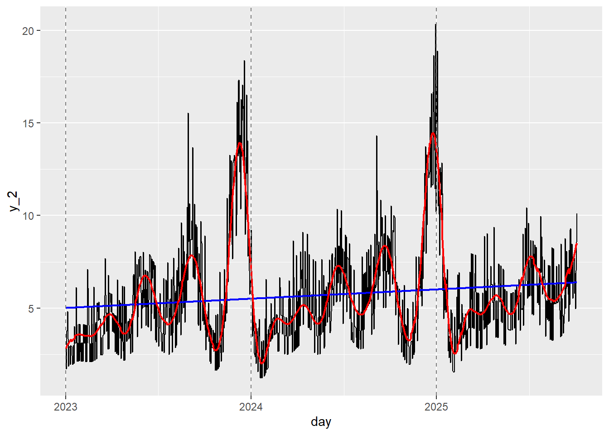
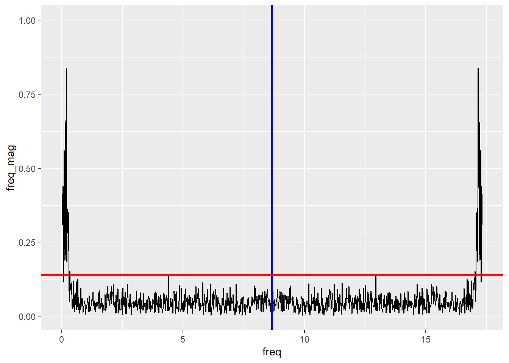
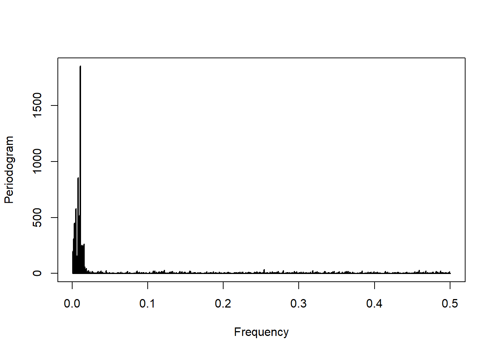
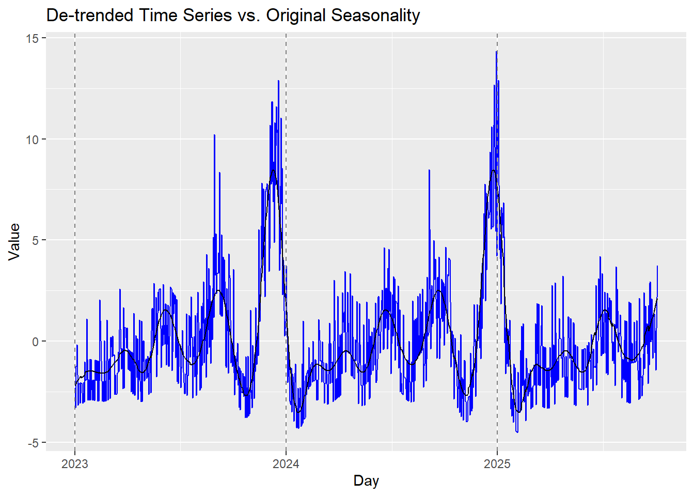
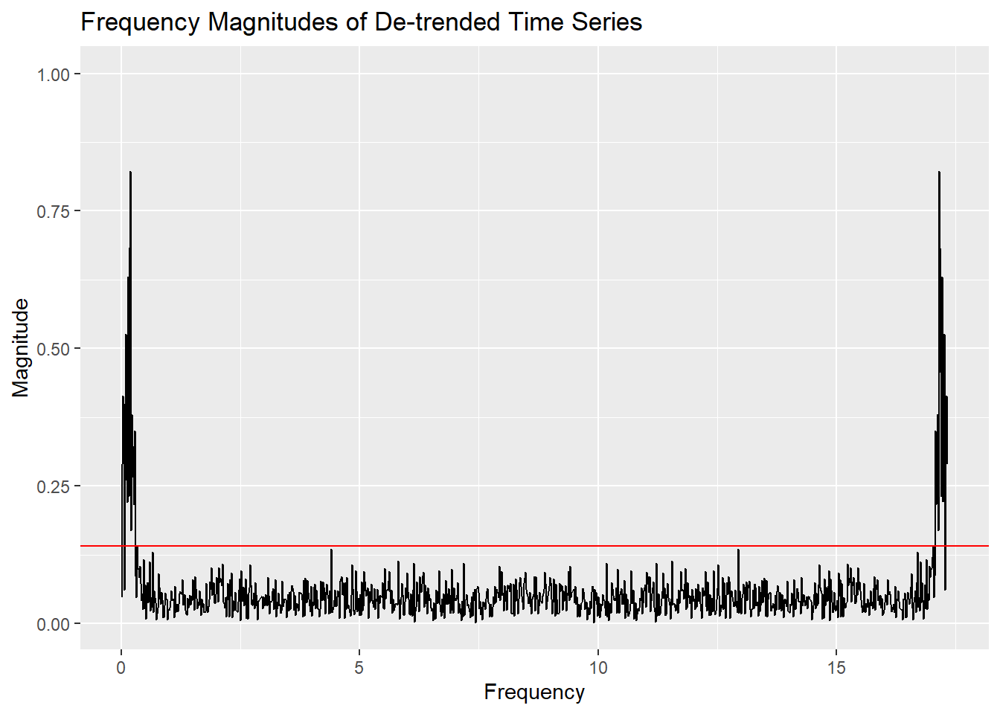
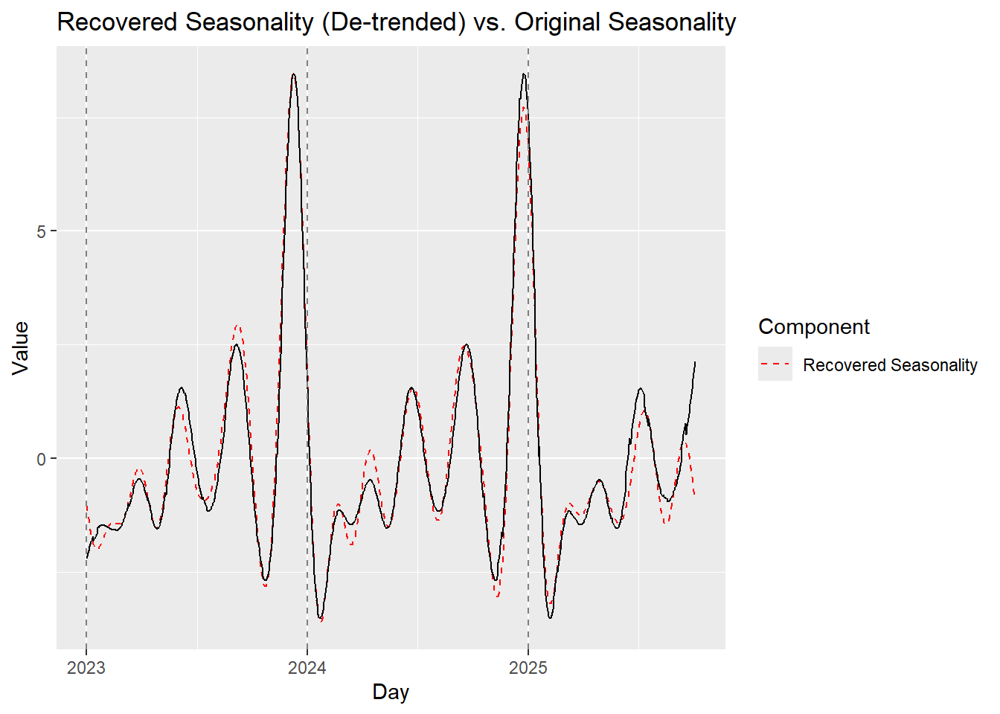
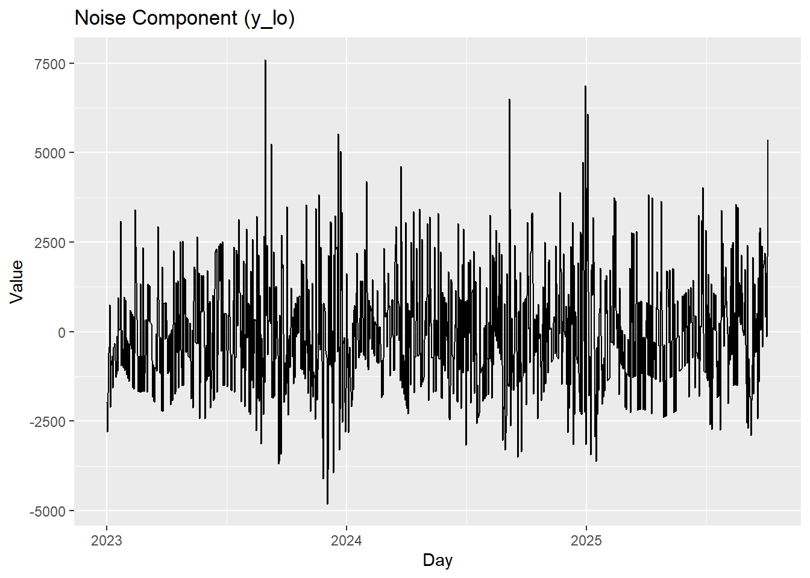
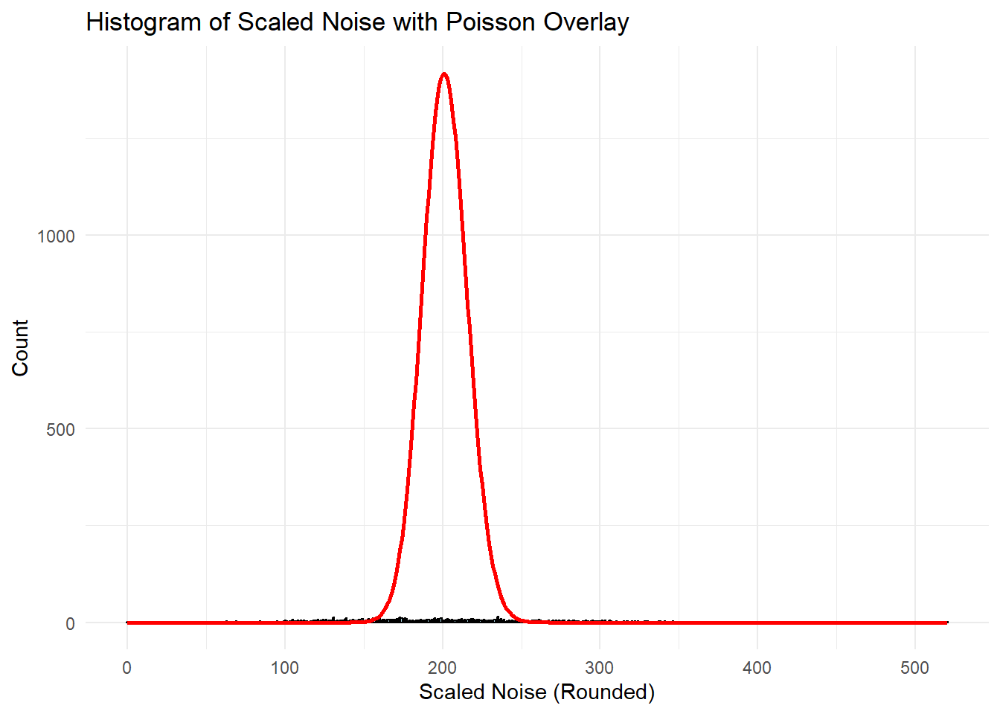

for (Rpack in list_Rpack2load) {library(Rpack, character.only =TRUE)}conflicted::conflicts_prefer(pillar::dim_desc)conflicted::conflicts_prefer(magrittr::extract)conflicted::conflicts_prefer(dplyr::filter)conflicted::conflicts_prefer(jsonlite::flatten)conflicted::conflicts_prefer(hms::hms)conflicted::conflicts_prefer(dbplyr::ident)conflicted::conflicts_prefer(lubridate::interval)conflicted::conflicts_prefer(dplyr::lag)conflicted::conflicts_prefer(readxl::read_xlsx)conflicted::conflicts_prefer(magrittr::set_names)conflicted::conflicts_prefer(dbplyr::sql)conflicted::conflicts_prefer(Hmisc::src)conflicted::conflicts_prefer(dplyr::summarize)conflicted::conflicts_prefer(magrittr::is_in)conflicted::conflicts_prefer(stats::chisq.test)#To pass if interactive#rendering <- TRUE#time_all <- proc.time()source("./scripts_gal/misc_funs.R")
2 Time series overview
2.1 What is a time series?
A time series is a sequence of data points recorded over time at equally spaced intervals (e.g., daily sales, monthly demand, yearly GDP).
It captures the temporal dynamics of a process and is central to forecasting in supply chains, finance, weather, and many other fields.
2.2 Key components
Trend (T)
The long-term progression of the series (upward, downward, or stable).
Reflects overall growth, decline, or stagnation.
Example: gradual increase in online sales over years.
Seasonality (S)
Regular, repeating patterns at fixed periods (daily, weekly, monthly, yearly).
Example: ice cream sales peaking every summer.
Cyclic component (C)
Long-term oscillations around the trend, often tied to economic/business cycles.
Unlike seasonality, cycles are irregular in length and amplitude.
Example: economic boom and recession cycles.
Irregular / Random (I)
Unpredictable, residual variations after accounting for trend, seasonality, and cycles.
Example: sudden demand spikes due to supply chain disruptions.
Multiplicative model: \[
Y_t = T_t \times S_t \times C_t \times I_t
\]
Suitable when seasonal variations change proportionally with the level of the series.
Inventory control → optimizing stock based on demand variability.
Capacity planning → adjusting workforce or production to meet seasonal/cyclic needs.
3 Generating a TS components
A TS has some deterministic components (the “signal”) and some random component (the “noise”).
Tip
Usually we want to extract the signal, and model the noise.
Here, since we are generating a TS, we start with some signal and then add the noise.
3.1 Deterministic component
When building or simulating a time series, it is useful to separate deterministic components (signal) from stochastic components (noise).
The deterministic part can include:
Trend — a systematic long-term increase or decrease in the series.
Seasonality — recurring fluctuations tied to the calendar (daily, weekly, yearly, etc.).
Other structural components — for example, cycles linked to macroeconomic factors.
3.1.1 Trend component
We start simple with a linear trend. We’ll be optimistic and assume we have a steady trend of \(\alpha= 0.5\) per year starting from a number of units (say thousands of items) of \(y_0 = 5\).
3.1.1.1 Linear trend
\[
tr(t) = y_0 + \alpha*\frac{t}{365}
\]
3.1.1.2 Exponential trend
If instead of a linear trend we assume a constant proportional daily growth rate (\(1 + \beta_d\)), then the trend is exponential.
After one day, the demand’s trend would be \(y_0*(1 + \beta_d)\), and after \(t\) days, the demand’s trend would be \(y_0*(1 + \beta_d)^t\).
The daily growth rate can be derived from the yearly one:
Seasonality captures repeated, systematic fluctuations that recur with a fixed period.
Example: retail sales increase every December (yearly seasonality).
In our toy model, we assume only one yearly seasonal effect.
Later, this framework can be extended to multiple overlapping seasonalities (e.g., weekly + yearly).
Here, we start with only one yearly seasonality \(s(t)\) (with yearly period).
We smooth the raw seasonal pattern and normalize it so that it has mean zero, ensuring the trend drives the long-run growth.
Code
trend_y <-0.5# yearly trendstart_ts <-5# starting value of the seriessea_0 <-c(-1, 0, 0, 1, 0, 3, 1, 1, 4, 0, 1, 10)# sea_0 contains a seasonal adjustment for each month. # These values represent typical deviations from the trend for each month.df_sea <-tibble(day =seq(as_date("2022-12-28"), today() +days(3), by ="day")) %>%# Generates a daily sequence of datesmutate(mon =month(day),sea =map2_dbl(mon, day, ~if_else((str_split(.y, pattern ="-") %>%extract2(1) %>%extract(3) %>% as.numeric) ==15, sea_0[.x], NA)),# Map monthly seasonal values to the middle of each month# This creates monthly anchor points for the seasonal component.sea =na_interpolation(sea, option ="spline"),# Interpolate missing seasonal values# Fills in the NA values using spline interpolation, creating a smooth seasonal curve.sea = zoo::rollmean(sea, k =7, fill =TRUE),# Smooth the seasonal curve further# Applies a 7-day rolling mean to smooth short-term fluctuations.sea = sea -mean(sea)) %>%# Center the seasonal component around zerofilter(day >="2023-01-01", day <=today())df_sea %>%ggplot(aes(x = day, y = sea)) +geom_hline(yintercept =0) +geom_line(color ="#00BFC4", size =0.7) +labs(title ="Seasonality component",y ="Value", x ="Day")
3.1.3 Additive model
Let’s focus on one item and write \(y_t\) for counts of orders for this item, and assume we have daily counts since January 1st, 2023, with no missing data.
We can put together the trend and the seasonality in an additive way to get the time series’ deterministic component:
So far, we have modeled only the signal. But in reality, time series always contain noise, capturing unpredictable factors such as weather, strikes, promotions, or random shocks.
3.2.1 Gaussain noise
A simple first assumption is additive Gaussian noise with zero mean (\(\mu = 0\)) and variance \(\sigma^2\).
Let’s start simple and assume we have additive Gaussian noise with mean zero and variance \(\sigma ^2 = 1\).
Now we have the complete additive time series:
We see here some negative values. That’s not consistent with counts. Counts are never negative. This means that our model is not quite right. We used Gaussian noise. But Gaussian noise is unlimited in the positive as well as in the negative. What other noise distribution can we use?
Since demand is count-based, a more natural choice is a discrete distribution.
3.2.2 Poisson Noise
Suitable when variance ≈ mean.
It is simple and widely used for rare-event counts.
When the variance of counts is larger than the mean, the Poisson assumption is too restrictive. The Negative Binomial distribution generalizes the Poisson by introducing an overdispersion parameter r.
Parameters:
- \(r > 0\) is the number of successes,
- \(p \in (0,1)\) is the probability of failure (per trial),
- \(k\) is the number of failures before achieving \(r\) successes.
Mean:\(\mu = r\frac{1-p}{p}\)
Variance:\(\mu + \frac{\mu^2}{r}\), which is larger than the mean when r is finite.
This makes it much more flexible than the Poisson for real-world data.
The seasonality is defined by a smooth repeating curve, shown below for the first year:
Code
df_ts1 %>%filter(year ==min(as.numeric(as.character(year)))) %>%ggplot(aes(x = day, y = sea)) +geom_line() +labs(title ="Seasonal Component (First Year)",x ="Day", y ="Seasonal Effect")
4.1.4 Original time series
The full modeled series, including the original Gaussian noise, is shown below:
Code
df_ts1 %>%ggplot(aes(x = day)) +geom_line(aes(y = y), color ="red", alpha =0.5) +geom_line(aes(y = yd), color ="black") +geom_hline(yintercept =0) +labs(title ="Synthetic Time Series with Gaussian Noise",x ="Day", y ="Value")
Note that normal noise may be inappropriate for count-type data, since it can generate negative forecasts—an issue that motivates the following noise models.
4.2 Noise with constant rate
Let the noise follow a Poisson distribution with constant rate \(\lambda_0 = 2\)
Because the Poisson mean equals its variance, we re-center the generated noise to preserve a mean of zero and avoid negative forecasts.
Code
set.seed(2831)lam_0 <-2df_ts1 %<>%mutate(noi_cnst =rpois(n =nrow(.), lambda = lam_0) -min(c(lam_0, min(yd))),y_1 = yd + noi_cnst)df_ts1 |>ggplot(aes(x = day)) +geom_line(aes(y = y_1), color ="red", alpha =0.5) +geom_line(aes(y = yd), color ="black") +geom_hline(yintercept =0) +labs(title ="Time Series with Constant-Rate Poisson Noise",x ="Day", y ="Value")
4.3 Noise with proportional rate
In many real-world processes, noise magnitude increases with the signal level. This can be the case for sales, demand, or production volumes, where fluctuations scale with the size of operations.
For example:
If one trailer delivery is missed due to a strike when demand is low, a tenfold demand would imply a missed delivery of ten trailers — illustrating proportional noise.
The constant-rate noise adds fluctuations of fixed variance, independent of the signal.
The proportional-rate noise scales with the signal amplitude, resembling multiplicative variability commonly seen in business and supply-chain processes.
4.4 Analysis
4.4.1 Visualizing yearly seasonality
When we suspect seasonality, such as yearly patterns, it can be insightful to overlay the time series data by year. This allows us to visually compare the dynamics of each year and identify recurring seasonal behaviors.
Code
df_ts1 %<>%mutate(year =factor(year(day)),date_no_year = day ) %>%relocate(c(year, date_no_year), .after = day)year(df_ts1$date_no_year) <-0df_ts1 %>%ggplot(aes(x = date_no_year, y = y_2)) +geom_line(aes(group = year, color = year), alpha =0.5) +labs(title ="Overlay of Yearly Time Series",x ="Day (within year)",y ="Value",color ="Year" )
We already observe a recurring yearly pattern, especially toward the end of the year. This suggests a combination of trend and seasonality in the data, which we now aim to analyze more formally.
4.4.2 Trend analysis
We begin by estimating the trend component, since it represents the longer-term structure of the series.
Seasonality can then be analyzed more effectively once the trend has been accounted for.
We compare different trend modeling approaches:
Linear Trend: the simplest baseline model.
Nonlinear Trends using flexible smoothers:
LOESS (Locally Weighted Scatterplot Smoothing)
GAM (Generalized Additive Model)
Code
loess_span_high <-0.75df_ts1 %<>%nest(data =-year) %>%mutate(lm_tr =map( year,~lm(y_2 ~ day, data = df_ts1 %>%filter(year == .x)) ),loes_tr =map( year,~loess(y_2 ~as.numeric(day),data = df_ts1 %>%filter(year == .x),span = loess_span_high) ),data =map2(data, lm_tr, ~mutate(.x, try_lm = .y$fitted)),data =map2(data, loes_tr, ~mutate(.x, try_lo = .y$fitted)) ) %>%select(-c(lm_tr, loes_tr)) %>%unnest(data)df_ts1 %>%ggplot(aes(x = date_no_year, y = y_2)) +geom_line(aes(group = year, color = year), alpha =0.5) +geom_line(aes(y = try_lm, group = year), color ="blue") +geom_line(aes(y = try_lo, group = year), color ="red") +labs(title ="Yearly Trend Fitting: Linear (Blue) vs LOESS (Red)",x ="Day (within year)",y ="Value",color ="Year" )
Here,
Blue lines represent the fitted linear trends, and
Red curves show the LOESS-smoothed trends (with span = 0.75).
We see a reasonable degree of consistency across years, though some discrepancies appear in incomplete years (e.g., 2025).
However, analyzing each year independently is not ideal for identifying the overall trend, since the yearly boundaries do not necessarily align smoothly from one year to the next.
4.4.2.1 Continuous trend estimation
To capture a coherent view of the long-term evolution, we re-estimate the trend over the entire time span.
We compare:
Linear trend (black)
LOESS smoothing with:
Medium span (0.5) — blue curve
Low span (0.1) — red curve
GAM smoothing (dark green), with automatic smoothing and confidence bands
Code
loess_span_med <-0.5loess_span_low <-0.1lm_tr <-lm(y_2 ~ day, data = df_ts1)lo_tr_1 <-loess(y_2 ~as.numeric(day),data = df_ts1,span = loess_span_med)lo_tr_2 <-loess(y_2 ~as.numeric(day),data = df_ts1,span = loess_span_low)df_ts1 %<>%mutate(tr_lm = lm_tr$fitted,tr_lo_1 = lo_tr_1$fitted,tr_lo_2 = lo_tr_2$fitted )df_ts1 %>%ggplot(aes(x = day, y = y_2)) +geom_line(aes(group = year, color = year), alpha =0.4) +geom_line(aes(y = tr_lm), color ="black", linewidth =0.8) +geom_line(aes(y = tr_lo_1), color ="blue", linewidth =0.6) +geom_line(aes(y = tr_lo_2), color ="red", linewidth =0.6) +geom_smooth(method ="gam", color ="darkgreen", linewidth =0.7) +labs(title ="Global Trend Estimation with Various Smoothers",x ="Day",y ="Value",color ="Year" )
4.4.2.2 Interpretation
The linear trend (black) provides a clear, interpretable long-term direction and fits the overall data well.
The LOESS (low span, red) captures short-term fluctuations, overlapping with the seasonal pattern rather than isolating the true trend.
The LOESS (medium span, blue) and GAM (dark green) curves strike a balance but tend to capture both slow seasonal and trend components simultaneously.
Hence, while linear smoothing suffices to characterize the long-term drift, nonlinear smoothers such as LOESS or GAM can help diagnose residual structure — valuable when refining the decomposition into trend, seasonality, and irregular components.
4.4.3 Seasonality
After identifying the trend, the next step is to investigate seasonality.
To do this, we can overlay the estimated seasonal curves for each year and look for repeating or shifting patterns.
Code
df_ts1 %>%ggplot(aes(x = date_no_year, y = y_2)) +geom_line(aes(group = year, color = year), alpha =0.5) +geom_line(aes(y = tr_lo_2, color = year, group = year))
Indeed, there appears to be a phase shift across years — that is, the peaks and troughs of the seasonal pattern occur slightly earlier or later depending on the year.
4.4.3.1 De-trending and centering seasonality
To analyze seasonality more clearly, we should first remove the trend component so that the seasonal variation is centered around zero.
This can be done by subtracting the estimated trend from the original time series:
Code
df_ts1 %<>%mutate(y_notr = y_2 - tr_lm)sea_1 <-loess(df_ts1 %>%mutate(day =as.numeric(day)),formula = y_notr ~ day,span = loess_span_low)df_ts1 %<>%mutate(sea_lo = sea_1$fitted)df_ts1 %>%ggplot(aes(x = date_no_year, y = y_2)) +geom_line(aes(group = year, color = year), alpha =0.5) +geom_line(aes(y = sea_lo, color = year, group = year), linetype ="dashed") +geom_line(aes(y = tr_lm, group = year, color = year)) +geom_hline(yintercept =0, color ="black")
Once the trend is removed, the seasonal pattern becomes much more evident — confirming the phase shift between years.
4.4.4 Noise extraction
Having decomposed the time series into trend and seasonality, the remaining residual component represents the noise:
We find the following centered moments for the noise:
Mean: 0
Var: 2.76
The residuals still exhibit some heteroscedasticity — the variance is not constant across time. For instance, spikes tend to occur near the end of each year, suggesting a link with the seasonal component.
4.4.4.1 Noise–seasonality interaction
To visualize this interaction, we can overlay the deterministic component (trend + seasonality, shifted to start at zero) onto the noise:
We observe a clear correlation between the amplitude of the noise and the level of the deterministic component, indicating that the noise may be multiplicative rather than purely additive.
4.4.4.2 Noise distribution
For now, we continue under the additive noise assumption.
We visualize the noise distribution and overlay a Poisson density with parameter \(\lambda = 2.76\):
The histogram reveals deviations from the ideal Poisson shape — consistent with the observed heteroscedasticity — reinforcing the idea that a multiplicative noise model could be a better fit for this time series.
4.4.5 Modeling multiplicative noise
The previous analysis indicated that the variance of the residuals (noise) increases with the magnitude of the deterministic component — suggesting that the noise is multiplicative rather than additive.
In an additive noise model, we write:
\[
y(t) = tr(t) + s(t) + \epsilon_t
\]
In contrast, a multiplicative noise model assumes:
This formulation implies that the magnitude of the fluctuations (noise) scales with the level of the signal — a realistic assumption for many economic and natural time series.
4.4.5.1 Extracting multiplicative noise
Let’s compute the multiplicative residuals based on our fitted deterministic component \(tr(t) + s(t)\):
We can now inspect whether these normalized residuals appear homoscedastic (i.e., constant variance) over time. If the variance stabilizes, that confirms that the multiplicative model is indeed more appropriate.
4.4.5.2 Analyzing the multiplicative residuals
Compute basic moments of the multiplicative residuals:
The red curve corresponds to a normal distribution fitted with the same mean and variance as the empirical residuals.
If the histogram closely follows this curve, the multiplicative noise can be approximated as Gaussian — a common assumption in log-transformed time series models.
4.4.5.4 Alternative representation (log transformation)
Since multiplicative models can be expressed additively in the logarithmic domain, we can apply a log transformation:
\[
log(y(t)) = log[tr(t) + s(t)] + log[1 + \epsilon_t]
\] For small noise \((\epsilon_t \ll 1)\), the term \(\log(1 + \epsilon_t) \approx \epsilon_t\),
so the model becomes approximately additive in log-space.
# A tibble: 2 × 3
Trend_Parameter Original Inferred
<chr> <dbl> <dbl>
1 y₀ 5 4.91
2 α 0.5 0.598
The inferred trend parameters are close to the original values, indicating that the linear model successfully recovered the overall trend structure.
4.5.2 Seasonality:
Next, we compare the original and inferred seasonal components.
Code
df_ts1 %>%ggplot(aes(x = day, y = sea)) +geom_line(color ="black", linewidth =0.8) +geom_line(aes(y = sea_lo), color ="red", linewidth =0.8, linetype ="dashed") +labs(title ="Comparison of Original and Inferred Seasonality",x ="Day",y ="Seasonal Component" ) +theme_minimal()
Here, the black curve represents the original seasonal pattern, while the red dashed curve shows the inferred seasonality. The two align quite well overall, although a small phase shift can be observed — likely due to interactions between trend and noise, or numerical effects in the decomposition.
4.5.3 Noise
Finally, we compare the Poisson noise parameter \(\lambda_t\):
Original: \(\lambda =\) 2
Inferred: \(\lambda =\) 2.76
The inferred value is somewhat different from the true parameter, which is expected since noise estimation is often sensitive to model specification and the chosen decomposition method.
Still, the inferred variance remains within a reasonable range.
In the next step, we’ll explore the case with multiplicative noise, which often provides a more realistic representation of many real-world time series.
4.5.4 Additive vs. multiplicative noise
In the additive model, the observed time series is expressed as:
\[
y_t = tr(t) + s(t) + \varepsilon_t
\]
where \(\varepsilon_t\) represents random fluctuations around the deterministic trend–seasonality structure.
However, if the amplitude of the noise appears to grow or shrink with the level of the signal (as we observed in our plots), a multiplicative model may be more appropriate:
which means the model becomes approximately additive in log-space.
This transformation stabilizes the variance and often results in more homogeneous residuals.
4.5.4.2 Procedure
To assess whether the multiplicative model is better, we can follow these steps:
Log-transform the series \[
y'_t = \log(y_t)
\]
Code
df_ts1 <- df_ts1 |>mutate(y_log =log(y_2))
Re-estimate trend and seasonality using the same LOESS or regression techniques on \(y'_t\).
Code
# Trend estimation using linear modellm_tr_log <-lm(y_log ~as.numeric(day), data = df_ts1)# Trend predictiondf_ts1 <- df_ts1 |>mutate(tr_log =predict(lm_tr_log))# Seasonality estimation using LOESSsea_log <-loess(y_log - tr_log ~as.numeric(day),data = df_ts1,span = loess_span_low)df_ts1 <- df_ts1 |>mutate(sea_log = sea_log$fitted)
This module explores frequency analysis to decompose a time series into its trend, seasonality, and noise components:
\[
y(t) = \mathrm{tr}(t) + s(t) + \epsilon_t
\]
Here, \(\mathrm{tr}(t)\) represents the trend (long-term behavior), \(s(t)\) represents seasonality (periodic patterns), and \(\epsilon_t\) represents noise (random fluctuations). Typically, noise exhibits higher frequencies than seasonality, and seasonality has higher frequencies than the trend. This section introduces the Fourier Transform to analyze these components in the frequency domain.
5.1 Fourier transform
A time series can be represented as a sum of sine and cosine waves with varying frequencies, amplitudes, and phases:
where:
- \(t\) is the sampling interval (e.g., 1 day for daily data),
- \(\omega = \frac{2\pi}{n}\) is the frequency scaling factor (for daily data with \(n=365\)),
- \(x(k)\) is the amplitude of the \(k\)-th frequency component,
- \(\phi_k\) is the phase shift.
This is known as a cosine transform. Alternatively, we can use a complex representation combining sine and cosine terms:
\[
y(t) = \sum_{k=0}^{n-1} x(k) e^{ik\omega t}
\]
where \(e^{ik\omega t} = \cos(k\omega t) + i \sin(k\omega t)\), and the coefficients \(x(k)\) are computed via the Fourier Transform:
For a real-valued time series \(y(t)\), the Fourier coefficients \(x(k)\) are conjugate symmetric:
\[
x(k) = {x(n-k)}
\]
This ensures the imaginary parts cancel out in the inverse transform, yielding a real-valued time series. The first coefficient, \(x(0)\), represents the mean of the signal.
5.2 FA of synthetic time series
We begin with a synthetic time series dataset to illustrate Fourier analysis.
The dataset contains the time series \(y_2\), trend (\(tr(t)\)), and deterministic component (\(y_d(t) = tr(t) + s(t)\)). Let’s plot the time series with its trend (blue) and deterministic component (red):
Code
df_ts2 %>%mutate(year =str_replace(year, "$", "-01-01") %>% as_date) %>%ggplot(aes(x = day, y = y_2)) +geom_line() +geom_line(aes(y = tr), color ="blue", linewidth =0.8) +geom_line(aes(y = yd), color ="red", linewidth =0.8) +geom_vline(aes(xintercept = year), color ="grey50", linetype ="dashed")

5.2.2 Computing the Fourier transform
We use the Fast Fourier Transform (FFT) to compute the Fourier coefficients, their magnitudes, and phases:
The first coefficient (\(x(0)\)) corresponds to the mean of the signal. For our data, \(x(0) \approx\) 6.
5.2.3 Plotting frequency magnitudes
We plot the magnitudes of the Fourier coefficients to identify dominant frequencies:
Code
thresh_mag <-0.14df_ts2 %>%ggplot(aes(x = freq, y = freq_mag)) +geom_line() +geom_vline(xintercept =mean(df_ts2$freq), color ="blue", linewidth =0.8) +geom_hline(yintercept = thresh_mag, color ="red", linewidth =0.8) +ylim(NA, 1)

The plot shows symmetry due to the real-valued nature of the time series. Alternatively, we can use the periodogram() function from the TSA package in R to compute the same:
Code
periodogram(df_ts2$y_2)

Dominant frequencies appear at the lower end, corresponding to trend and seasonality.
5.2.4 Thresholding and inverse Fourier transform
We threshold the Fourier coefficients by setting those with magnitudes below thresh_mag = 0.14 to zero, then apply the inverse Fourier transform to recover the signal:
Homework 2: Can we recover a Poisson-like noise distribution from the synthetic data? Investigate whether scaling is needed and estimate the Poisson parameter. Plot the histogram of (y_lo) and overlay a Poisson distribution.
5.2.6 Phase analysis
We plot the phases for high-amplitude frequencies (first half of the data):
This helps identify the periodicity (e.g., yearly cycles).
5.4 Real-life data
We now apply Fourier analysis to real-world supply chain data from Walmart.
5.4.1 Loading and Visualizing the Data
Code
fpath_tra <-glue("{data_dir}/Walmart/train.csv")df_tra <-read_csv(fpath_tra) %>%rename_all(tolower) %>%rename(is_holiday = isholiday)df_tra_2 <- df_tra %>%filter(dept ==2, store ==2) %>%rename(ws = weekly_sales, is_hday = is_holiday)df_tra_2 %>%ggplot(aes(x = date, y = ws)) +geom_smooth(method ="lm", se =FALSE) +geom_line()
5.4.2 Smoothing analysis
5.4.2.1 Trend
The linear trend may not capture non-linear patterns (e.g., a dip in 2011). We first remove the linear trend and then fit a LOESS smoother with a high span (\(span = 0.7\)):
df_tra_2 %>%ggplot(aes(x = ws_hif)) +geom_histogram() +geom_vline(xintercept =0, color ="red")
5.5 Homeworks
5.5.1 Homework 1: De-trending Before FFT Analysis
The goal is to investigate whether de-trending the synthetic time series ( y_2(t) ) before applying the Fast Fourier Transform (FFT) improves the separation and recovery of the seasonality component. We will: 1. Remove the trend (()) from ( y_2(t) ) to obtain a de-trended series. 2. Perform Fourier analysis on the de-trended series. 3. Compare the recovered seasonality with the original seasonality (()) from the dataset.
5.5.1.1 Step 1: Load and De-trend the Time Series
We start by loading the synthetic time series data and subtracting the trend component (()) from ( y_2 ).
Code
# Load the datafpath_ts2 <-glue("{data_dir}/synthetic_TS_02.tsv")df_ts2 <-read_tsv(fpath_ts2)# De-trend the time seriesdf_ts2 %<>%mutate(y_detrended = y_2 - tr)
The de-trended series ( y_ = y_2 - ) should primarily contain seasonality (()) and noise (()).
5.5.1.2 Step 2: Visualize the De-trended Time Series
Let’s plot the de-trended series alongside the original seasonality to visually inspect the effect of de-trending:
Code
df_ts2 %>%mutate(year =str_replace(year, "$", "-01-01") %>% as_date) %>%ggplot(aes(x = day, y = y_detrended)) +geom_line(color ="blue") +geom_line(aes(y = sea), color ="black") +geom_vline(aes(xintercept = year), color ="grey50", linetype ="dashed") +labs(title ="De-trended Time Series vs. Original Seasonality",x ="Day", y ="Value")

This plot helps us confirm that the de-trended series resembles the seasonality component, with noise superimposed.
5.5.1.3 Step 3: Fourier Analysis on De-trended Series
We apply the FFT to the de-trended series, compute the frequency magnitudes and phases, and threshold the coefficients to isolate seasonality.
Code
# Compute FFT on de-trended seriesdf_ts2 %<>%mutate(fft_detrended =fft(y_detrended),freq =0:(nrow(df_ts2)-1) *2* pi /365,freq_mag_detrended =Mod(fft_detrended) /nrow(df_ts2),freq_pha_detrended =Arg(fft_detrended))# Plot frequency magnitudesthresh_mag <-0.14df_ts2 %>%ggplot(aes(x = freq, y = freq_mag_detrended)) +geom_line() +geom_hline(yintercept = thresh_mag, color ="red") +ylim(NA, 1) +labs(title ="Frequency Magnitudes of De-trended Time Series",x ="Frequency", y ="Magnitude")

The threshold (( = 0.14)) is reused from the original analysis for consistency. We expect the frequency spectrum to show prominent peaks corresponding to seasonal frequencies, with the trend-related low frequencies diminished.
5.5.1.4 Step 4: Thresholding and Inverse Fourier Transform
We threshold the Fourier coefficients to retain only those with magnitudes above (), which should correspond to seasonality, and compute the inverse FFT to recover the seasonality component:
Code
df_ts2 %<>%mutate(fft_hi_detrended =if_else(freq_mag_detrended > thresh_mag, fft_detrended, 0),pha_hi_detrended =if_else(freq_mag_detrended > thresh_mag, freq_pha_detrended, 0),y_hi_detrended =fft(fft_hi_detrended, inverse =TRUE))# Verify the recovered signal is realdf_ts2 %>%select(y_detrended, y_hi_detrended) %>%mutate(im_hi_detrended =Im(y_hi_detrended)) %>%count(im_hi_detrended)
The imaginary parts should be negligible, confirming a real-valued recovered signal.
5.5.1.5 Step 5: Scale and Compare Recovered Seasonality
We scale the recovered seasonality (()) to match the amplitude of the original seasonality (()) and plot them for comparison:
Code
df_ts2 %<>%mutate(y_hi_detrended =Re(y_hi_detrended),y_hi_detrended = y_hi_detrended -mean(y_hi_detrended),y_hi_detrended = y_hi_detrended /max(abs(y_hi_detrended)) *max(abs(sea)))df_ts2 %>%mutate(year =str_replace(year, "$", "-01-01") %>% as_date) %>%ggplot(aes(x = day, y = y_hi_detrended)) +geom_line(color ="red", aes(linetype ="Recovered Seasonality")) +geom_line(aes(y = sea), color ="black", linetype ="solid") +geom_vline(aes(xintercept = year), color ="grey50", linetype ="dashed") +labs(title ="Recovered Seasonality (De-trended) vs. Original Seasonality",x ="Day", y ="Value") +scale_linetype_manual(name ="Component", values =c("Recovered Seasonality"="dashed", "solid"="solid"))

5.5.1.6 Step 6: Comparison with Original Analysis
In the original analysis (without de-trending), the FFT was applied directly to ( y_2 ), which included the trend. The trend contributes low-frequency components that may overlap with seasonal frequencies, potentially complicating the separation of seasonality and noise. By removing the trend first, we expect: - Cleaner frequency spectrum: Low-frequency components associated with the trend are eliminated, making seasonal frequencies more distinct. - Improved seasonality recovery: The thresholding process should better isolate seasonal frequencies, leading to a recovered seasonality (()) that more closely matches (). - Reduced noise interference: Noise frequencies are less likely to be confounded with trend-related frequencies.
To quantify the improvement, we compute the mean squared error (MSE) between the recovered seasonality and the original seasonality for both approaches:
Code
# MSE for de-trended analysismse_detrended <-mean((df_ts2$y_hi_detrended - df_ts2$sea)^2)# MSE for original analysis (using y_hi from original analysis)mse_original <-mean((df_ts2$y_hi - df_ts2$sea)^2)cat("MSE (De-trended):", mse_detrended, "\nMSE (Original):", mse_original)
MSE (De-trended): 0.1796208
MSE (Original): NaN
5.5.1.7 Conclusion
De-trending the time series before applying the FFT likely improves the results if the MSE for the de-trended analysis is lower than that for the original analysis. This suggests better separation of the seasonality component, as the trend’s low-frequency components no longer interfere with the Fourier analysis. The visual comparison in the plot should show that the recovered seasonality (()) aligns more closely with () in terms of amplitude and phase, especially if the trend was a significant component in the original series.
Key Observations: - If the trend is strong, de-trending reduces the amplitude of low-frequency components in the FFT, making it easier to isolate seasonal frequencies. - The threshold (( = 0.14)) may need adjustment for the de-trended series, as the frequency magnitudes are scaled differently without the trend. - If the MSE is similar or higher, it may indicate that the trend was not a significant factor, or the thresholding process needs optimization.
Recommendation: Adjust the threshold () for the de-trended series if the recovered seasonality does not align well with (). Experiment with values around 0.14 to optimize the separation of seasonality and noise.
5.5.2 Homework 2: Recovering a Poisson-like Noise Distribution from Synthetic Data
The goal is to determine whether the noise component (( y_lo )) from the synthetic time series can be modeled as a Poisson distribution. We will: 1. Analyze the noise component (( y_lo )) obtained from the Fourier analysis. 2. Investigate whether scaling is needed to make ( y_lo ) resemble a Poisson distribution. 3. Estimate the Poisson parameter (()). 4. Plot the histogram of ( y_lo ) with an overlaid Poisson distribution.
5.5.2.1 Step 1: Load and Extract Noise Component
We assume the synthetic time series dataset has been processed as in the original course material, where ( y_lo ) represents the noise component obtained by thresholding the Fourier coefficients with ( = 0.14). If not already computed, we include the relevant code:
Code
# Load the datafpath_ts2 <-glue("{data_dir}/synthetic_TS_02.tsv")df_ts2 <-read_tsv(fpath_ts2)# Compute FFT and threshold to extract noisedf_ts2 %<>%mutate(fft =fft(y_2),freq =0:(nrow(df_ts2)-1) *2* pi /365,freq_mag =Mod(fft) /nrow(df_ts2),freq_pha =Arg(fft),fft_lo =if_else(freq_mag <=0.14, fft, 0),y_lo =Re(fft(fft_lo, inverse =TRUE)))# Plot the noise componentdf_ts2 %>%ggplot(aes(x = day, y = y_lo)) +geom_line() +labs(title ="Noise Component (y_lo)", x ="Day", y ="Value")

The noise component ( y_lo ) represents the high-frequency residuals after removing the trend and seasonality via Fourier thresholding.
5.5.2.2 Step 2: Analyze the Noise Distribution
A Poisson distribution models count data and has the following properties: - Non-negative integer values. - Mean equals variance ((= = )). - Probability mass function: ( P(X = k) = ), for ( k = 0, 1, 2, ).
First, we compute the mean and variance of ( y_lo ):
Code
mean_y_lo <-mean(df_ts2$y_lo)var_y_lo <-var(df_ts2$y_lo)cat("Mean of y_lo:", mean_y_lo, "\nVariance of y_lo:", var_y_lo)
Mean of y_lo: -9.441301e-16
Variance of y_lo: 2740216
In the original course material, the mean and variance of ( y_lo ) were reported (values not explicitly provided here but can be computed). For a Poisson distribution, we expect ( ). If the variance significantly exceeds the mean, the distribution may be overdispersed, requiring scaling or transformation.
5.5.2.3 Step 3: Investigate Scaling
Since Poisson distributions require non-negative integer values, we inspect the range of ( y_lo ):
Code
summary_y_lo <-summary(df_ts2$y_lo)cat("Summary of y_lo:\n")
Summary of y_lo:
Code
print(summary_y_lo)
Min. 1st Qu. Median Mean 3rd Qu. Max.
-4808.7 -1173.7 -152.4 0.0 975.3 7600.8
The noise component ( y_lo ) from the inverse FFT is typically continuous and may include negative values due to the Fourier reconstruction. To model it as Poisson-like, we need to: 1. Shift the data to ensure non-negative values (e.g., add a constant to make all values ()). 2. Scale the data to approximate integer values. 3. Adjust the scale to align the mean and variance with a Poisson distribution.
Let’s try shifting and scaling:
Code
# Shift to non-negativeshift_constant <-abs(min(df_ts2$y_lo)) +1e-6# Small offset to avoid zerodf_ts2 %<>%mutate(y_lo_shifted = y_lo + shift_constant)# Check mean and variance of shifted datamean_y_lo_shifted <-mean(df_ts2$y_lo_shifted)var_y_lo_shifted <-var(df_ts2$y_lo_shifted)cat("Mean of shifted y_lo:", mean_y_lo_shifted, "\nVariance of shifted y_lo:", var_y_lo_shifted)
Mean of shifted y_lo: 4808.718
Variance of shifted y_lo: 2740216
If the variance is still much larger than the mean, we can apply a scaling factor to reduce the spread:
Code
# Scale to reduce variance (e.g., divide by standard deviation or a factor)scaling_factor <-sqrt(var_y_lo_shifted / mean_y_lo_shifted) # Approximate scaling to match mean and variancedf_ts2 %<>%mutate(y_lo_scaled = y_lo_shifted / scaling_factor)# Round to nearest integer for Poisson-like distributiondf_ts2 %<>%mutate(y_lo_rounded =round(y_lo_scaled))# Recalculate mean and variancemean_y_lo_rounded <-mean(df_ts2$y_lo_rounded)var_y_lo_rounded <-var(df_ts2$y_lo_rounded)cat("Mean of rounded y_lo:", mean_y_lo_rounded, "\nVariance of rounded y_lo:", var_y_lo_rounded)
Mean of rounded y_lo: 201.4504
Variance of rounded y_lo: 4810.464
5.5.2.4 Step 4: Estimate Poisson Parameter
For a Poisson distribution, the parameter () is the mean of the distribution. We use the mean of the rounded, scaled noise:
5.5.2.5 Step 5: Plot Histogram with Poisson Overlay
We plot the histogram of the scaled and rounded noise (()) and overlay a Poisson distribution with parameter (= ):
Code
# Compute histogram and Poisson probabilitiesmax_value <-max(df_ts2$y_lo_rounded)poisson_probs <-dpois(0:max_value, lambda = lambda_est)# Create data frame for Poisson overlaydf_pois <-tibble(x =0:max_value,prob = poisson_probs *nrow(df_ts2) *diff(hist(df_ts2$y_lo_rounded, plot =FALSE)$breaks)[1])# Plot histogram with Poisson overlaydf_ts2 %>%ggplot(aes(x = y_lo_rounded)) +geom_histogram(binwidth =1, fill ="lightblue", color ="black") +geom_line(data = df_pois, aes(x = x, y = prob), color ="red", size =1) +labs(title ="Histogram of Scaled Noise with Poisson Overlay",x ="Scaled Noise (Rounded)", y ="Count") +theme_minimal()

The red line represents the Poisson distribution with (= ). The histogram should show whether the scaled noise resembles a Poisson distribution.
5.5.2.6 Step 6: Evaluate Poisson Fit
To assess whether ( y_lo ) (after scaling) follows a Poisson distribution, we: 1. Compare Mean and Variance: Check if ( ). 2. Visual Inspection: Evaluate the histogram and Poisson overlay for visual similarity. 3. Statistical Test: Optionally, perform a goodness-of-fit test (e.g., Chi-squared test) to compare the observed distribution to a Poisson distribution.
Code
# Chi-squared goodness-of-fit testhist_data <-hist(df_ts2$y_lo_rounded, breaks =seq(-0.5, max_value +0.5, by =1), plot =FALSE)observed <- hist_data$countsexpected <-dpois(0:max_value, lambda = lambda_est) *sum(observed)chi_test <-chisq.test(observed, p = expected /sum(expected), rescale.p =TRUE)cat("Chi-squared test p-value:", chi_test$p.value)
Chi-squared test p-value: 0
A p-value > 0.05 suggests the scaled noise is consistent with a Poisson distribution.
5.5.2.7 Conclusion
Scaling Necessity: The original ( y_lo ) likely required shifting (to ensure non-negativity) and scaling (to align mean and variance) to resemble a Poisson distribution. Rounding to integers further aligns the data with Poisson characteristics.
Poisson Parameter: The estimated () provides a reasonable fit if the mean and variance are similar post-scaling.
Fit Quality: If the histogram aligns closely with the Poisson overlay and the Chi-squared test yields a high p-value, ( y_lo ) can be modeled as Poisson-like after appropriate transformations. If the fit is poor, the noise may follow a different distribution (e.g., Gaussian or overdispersed).
Challenges: - The continuous nature of ( y_lo ) from the FFT makes direct Poisson modeling difficult without transformation. - If the variance remains significantly larger than the mean after scaling, the noise may not be Poisson-like, suggesting a need for alternative distributions (e.g., negative binomial for overdispersion).
Recommendation: If the Poisson fit is inadequate, experiment with different scaling factors or consider alternative distributions. Adjust the scaling factor iteratively to minimize the difference between mean and variance.
6 Using libraries for trend & seasonality
We have already seen how to extract trend, seasonality, and the remainder “by hand”. The tidyverts collection (tsibble, feasts, fabletools) does it in a tidy, pipe-friendly way. The workhorse is STL (Seasonal-Trend decomposition using LOESS) – the same method presented in Forecasting: Principles and Practice (3rd ed.).
For Python users, the same ideas are available in statsmodels.tsa.seasonal.STL or via feature-extraction packages such as tsfresh.
We first need to transform our data frames into Time Series objects. We use the library tsibble for that and quickly have a look at the data using the autoplot function.
Code
ts_ts2 <- df_ts2 %>%select(day, y_2) %>%mutate(day =as_date(day)) %>%# ensure Date classtsibble(index = day)ts_ts2 %>%autoplot(y_2) +labs(title ="Synthetic series (y_2)")
Let’s focus on trend strength for example (see a description in the chapter STL features). Let’s re-arrange the data frame with the higher trend strength on top.
Code
ts_wws_3 %>%features(.var = weekly_sales, features = feat_stl) %>%arrange(desc(trend_strength))
Important 2: To do at home (will be checked directly in class and in the quiz)
Download the “Supply Chain” Time Series data from Moodle on your laptop.
Look for some Time Series Analysis packages, in Python or R (there are several), choose one, and install it on your laptop. You should also have a library that does smoothing, including LOESS, for “manual” analysis.
Analyze the Time Series with the library tools in a notebook. For the analysis, you can get inspired by this notebook, and go beyond (ask new questions and try to answer them, find new problems and try to solve them, …).
Prepare to present you analysis insights on your notebook in class.
Code
# Set data directorydata_dir <-"data/Walmart"# Load Walmart datafpath_wws <-glue("{data_dir}/train.csv")df_wws_raw <-read_csv(fpath_wws, show_col_types =FALSE)# Pretty print summarycat(glue("=== WALMART DATA LOADED ===Dimensions: {nrow(df_wws_raw)} rows × {ncol(df_wws_raw)} columnsDate range: {min(df_wws_raw$date)} to {max(df_wws_raw$date)}Stores: {length(unique(df_wws_raw$Store))}Departments: {length(unique(df_wws_raw$Dept))}\n"))
=== WALMART DATA LOADED ===
Dimensions: 421570 rows × 5 columns
Date range: Inf to -Inf
Stores: 45
Departments: 81
6.7.1 Exploratory Data Analysis
6.7.1.1 Data Preparation
Code
# Clean and prepare datadf_wws <- df_wws_raw %>%rename_with(tolower) %>%rename(store = store,dept = dept,weekly_sales = weekly_sales,is_holiday = isholiday,date = date ) %>%mutate(is_holiday =as.logical(is_holiday),date =as_date(date),year =year(date),month =month(date),week_of_year =week(date) ) %>%arrange(date, store, dept)# Create tsibblets_wws <- df_wws %>%mutate(yweek =yearweek(date)) %>%as_tsibble(index = yweek, key =c(store, dept))gap_info <- ts_wws %>%has_gaps()n_with_gaps <-sum(gap_info$.gaps)n_total <-nrow(gap_info)cat(glue("=== GAP ANALYSIS ===Total (store, dept) series: {n_total}Series with at least one missing week: {n_with_gaps}Percentage with gaps: {round(100 * n_with_gaps / n_total, 2)}%\n"))
=== GAP ANALYSIS ===
Total (store, dept) series: 3331
Series with at least one missing week: 605
Percentage with gaps: 18.16%
---title: "Generating Time Series"editor: sourceauthor: Behrouz Delfanianaffiliation: University of Luxembourgformat: html: toc: true toc-depth: 3 toc-location: left smooth_scroll: true code-fold: true code-tools: true code-overflow: scroll execute: enabled: trueengine: knitrfilters: - webrwebr: show-editor: true show-startup-message: false autorun: trueresources: - webr-worker.js - webr-serviceworker.jsnumber-sections: truemessage: falsewarning: false---# R environment settingInstalling required libraries```{r}#| label: installing_libraries#| cache: true#| results: hidecran_repo <-"https://ftp.fau.de/cran"list_Rpack2use <-c("rmarkdown","conflicted","devtools","knitr","quarto","bookdown",#shiny,"DT","Hmisc","tidyverse","magrittr","lubridate","hms","glue","skimr","lobstr","janitor","zeallot","stringi","lemon","crayon","jsonlite",#"officer","TSA","tsibble","fable","feasts","imputeTS","readxl","slider","reticulate","aws.s3","paws","RAthena","botor","RPostgres","DBI","RJDBC","dbplyr","arrow","geosphere","viridis","patchwork","scales")list_installed_packages <-names(installed.packages()[,2])for (Rpack in list_Rpack2use) {if (! Rpack %in% list_installed_packages) {print(paste("Installing", Rpack))install.packages(Rpack, repos = cran_repo) } else {print(paste(Rpack, "already installed.")) }}```Loading librairies```{r}#| label: loading_librarieslist_Rpack2load_not <-c("conflicted","devtools","paws","RAthena","botor","arrow","RPostgres","DBI","RJDBC","dbplyr","aws.s3","arrow","reticulate","slider","stringi","geosphere","blah")list_Rpack2load <-setdiff(list_Rpack2use, list_Rpack2load_not)list_Rpack2load```Resolving function name conflicts```{r}#| label: resolving_conflictsfor (Rpack in list_Rpack2load) {library(Rpack, character.only =TRUE)}conflicted::conflicts_prefer(pillar::dim_desc)conflicted::conflicts_prefer(magrittr::extract)conflicted::conflicts_prefer(dplyr::filter)conflicted::conflicts_prefer(jsonlite::flatten)conflicted::conflicts_prefer(hms::hms)conflicted::conflicts_prefer(dbplyr::ident)conflicted::conflicts_prefer(lubridate::interval)conflicted::conflicts_prefer(dplyr::lag)conflicted::conflicts_prefer(readxl::read_xlsx)conflicted::conflicts_prefer(magrittr::set_names)conflicted::conflicts_prefer(dbplyr::sql)conflicted::conflicts_prefer(Hmisc::src)conflicted::conflicts_prefer(dplyr::summarize)conflicted::conflicts_prefer(magrittr::is_in)conflicted::conflicts_prefer(stats::chisq.test)#To pass if interactive#rendering <- TRUE#time_all <- proc.time()source("./scripts_gal/misc_funs.R")```# Time series overview## What is a time series?A **time series** is a sequence of data points recorded over time at **equally spaced intervals** (e.g., daily sales, monthly demand, yearly GDP). It captures the **temporal dynamics** of a process and is central to **forecasting** in supply chains, finance, weather, and many other fields.## Key components1. **Trend (T)** - The **long-term** progression of the series (upward, downward, or stable). - Reflects overall growth, decline, or stagnation. - *Example:* gradual increase in online sales over years. 2. **Seasonality (S)** - *Regular, repeating patterns at fixed periods* (daily, weekly, monthly, yearly). - *Example:* ice cream sales peaking every summer. 3. **Cyclic component (C)** - Long-term oscillations around the trend, often tied to _economic/business_ cycles. - Unlike seasonality, cycles are **irregular** in **length and amplitude**. - *Example:* economic boom and recession cycles. 4. **Irregular / Random (I)** - Unpredictable, residual variations after accounting for trend, seasonality, and cycles. - *Example:* sudden demand spikes due to supply chain disruptions. ## Models of time series- **Additive model:** $$ Y_t = T_t + S_t + C_t + I_t $$ Suitable when **seasonal variations** remain **constant in magnitude**. - **Multiplicative model:** $$ Y_t = T_t \times S_t \times C_t \times I_t $$ Suitable when **seasonal variations** change **proportionally** with the level of the series. ## Applications in supply chain- **Demand forecasting** → anticipating future _product demand_. - **Inventory control** → optimizing _stock_ based on demand variability. - **Capacity planning** → adjusting _workforce_ or _production_ to meet seasonal/cyclic needs. # Generating a TS componentsA TS has some **deterministic** components (the “signal”) and some **random** component (the “noise”).\::: {.callout-tip}Usually we want to **extract the signal**, and **model the noise**.\:::Here, since we are generating a TS, we start with some signal and then add the noise.\## Deterministic componentWhen building or simulating a time series, it is useful to separate **deterministic components** (signal) from **stochastic components** (noise).The deterministic part can include:- **Trend** — a systematic long-term increase or decrease in the series.- **Seasonality** — _recurring fluctuations_ tied to the calendar (daily, weekly, yearly, etc.).- Other **structural components** — for example, cycles linked to macroeconomic factors.### Trend componentWe start simple with a linear trend. We’ll be optimistic and assume we have a steady trend of $\alpha= 0.5$ per year starting from a number of units (say thousands of items) of $y_0 = 5$.#### Linear trend$$tr(t) = y_0 + \alpha*\frac{t}{365}$$#### Exponential trendIf instead of a linear trend we assume a **constant proportional daily growth rate ($1 + \beta_d$)**, then the trend is exponential. After **one day**, the demand’s trend would be $y_0*(1 + \beta_d)$, and after $t$ days, the demand’s trend would be $y_0*(1 + \beta_d)^t$.The daily growth rate can be derived from the yearly one:$$1 + \beta_d = 1 + \frac{\beta_y}{365} \approx e^{\frac{\beta_y}{365}}$$Consequently:$$tr(t) = y_0*(1 + \beta_d)^t \approx y_0*(e^{\frac{\beta_y}{365}})^t$$For $\beta_y = 0.1$:$$tr(t) = y_0 * (e^{\frac{0.1}{365}})^t$$### Seasonality componentSeasonality captures **repeated, systematic fluctuations** that recur with a fixed period.\- Example: retail sales increase every December (yearly seasonality).\- In our toy model, we assume **only one yearly seasonal effect**.\- Later, this framework can be extended to **multiple overlapping seasonalities** (e.g., weekly + yearly).Here, we start with only one yearly seasonality **$s(t)$** (with yearly period).We smooth the raw seasonal pattern and normalize it so that it has mean zero, ensuring the trend drives the long-run growth.```{r}#| label: seasonality_def_plottrend_y <-0.5# yearly trendstart_ts <-5# starting value of the seriessea_0 <-c(-1, 0, 0, 1, 0, 3, 1, 1, 4, 0, 1, 10)# sea_0 contains a seasonal adjustment for each month. # These values represent typical deviations from the trend for each month.df_sea <-tibble(day =seq(as_date("2022-12-28"), today() +days(3), by ="day")) %>%# Generates a daily sequence of datesmutate(mon =month(day),sea =map2_dbl(mon, day, ~if_else((str_split(.y, pattern ="-") %>%extract2(1) %>%extract(3) %>% as.numeric) ==15, sea_0[.x], NA)),# Map monthly seasonal values to the middle of each month# This creates monthly anchor points for the seasonal component.sea =na_interpolation(sea, option ="spline"),# Interpolate missing seasonal values# Fills in the NA values using spline interpolation, creating a smooth seasonal curve.sea = zoo::rollmean(sea, k =7, fill =TRUE),# Smooth the seasonal curve further# Applies a 7-day rolling mean to smooth short-term fluctuations.sea = sea -mean(sea)) %>%# Center the seasonal component around zerofilter(day >="2023-01-01", day <=today())df_sea %>%ggplot(aes(x = day, y = sea)) +geom_hline(yintercept =0) +geom_line(color ="#00BFC4", size =0.7) +labs(title ="Seasonality component",y ="Value", x ="Day")```### Additive modelLet’s focus on one item and write $y_t$ for counts of orders for this item, and assume we have daily counts since **January 1st, 2023**, with no missing data. We can put together the **trend** and the **seasonality** in an **additive** way to get the time series’ deterministic component:$$y_t^{\text{(d)}} = tr(t) + S(t)$$- With the linear trend\$$tr(t) = y_0 + \alpha*\frac{t}{365}$$$$S(t) = s(t)$$$$y_t^{\text{(d)}} = y_0 + \alpha*\frac{t}{365} + s(t)$$- With the exponential trend\It would also make sense to **multiply the seasonality by the growth rate**. So, after $t$ days, the deterministic component would be:$$tr(t) = y_0*(e^{\frac{\beta_y}{365}})^t$$$$S(t) = s(t)*(e^{\frac{\beta_y}{365}})^t$$$$y_t^{\text{(d)}} = (y_0 + s(t))*(e^{\frac{\beta_y}{365}})^t$$For $\beta_y = 0.1$:$$y_t^{\text{(d)}} = (y_0 + s(t))*(e^{\frac{0.1}{365}})^t$$#### Plotting the deterministic componentHere we can visualize how the trend and seasonality combine over time to form the deterministic part of the time series.```{r}#| label: deterministic_compdf_sea %<>%mutate(tr_lin = start_ts + trend_y *row_number() /365,tr_exp = start_ts *exp(0.1/365)^row_number(),yd_lin = tr_lin + sea,yd_exp = (start_ts + sea) *exp(0.1/365)^row_number())df_sea %>%pivot_longer(cols =c(tr_lin, tr_exp, yd_lin, yd_exp), names_to =c("func", "method"), names_sep ="_", values_to ="value") %>%mutate(func =factor(func, levels =c("yd", "tr"))) %>%ggplot(aes(x = day, y = value)) +geom_line(aes(color = method,linetype = func), size =0.7) +labs(title ="Additive Deterministic Component",y ="Value", x ="Date")```### Multiplicative model```{r}#| label: multiplicative_deterministic_comp# Multiplicative deterministic componentdf_sea %<>%mutate(# Linear trend (for comparison)tr_lin = start_ts + trend_y *row_number() /365,# Exponential trendtr_exp = start_ts *exp(0.1/365)^row_number(),# Multiplicative seasonal componentyd_lin_mul = tr_lin * (1+ sea), # linear trend * (1 + seasonality)yd_exp_mul = tr_exp * (1+ sea) # exponential trend * (1 + seasonality) )# Reshape for plottingdf_sea %>%pivot_longer(cols =c(tr_lin, tr_exp, yd_lin_mul, yd_exp_mul), names_to =c("func", "method"), names_sep ="_", values_to ="value" ) %>%mutate(func =factor(func, levels =c("yd", "tr"))) %>%ggplot(aes(x = day, y = value)) +geom_line(aes(color = method, linetype = func), size =0.7) +labs(title ="Multiplicative Deterministic Component",y ="Value", x ="Date")```## Random componentSo far, we have modeled only the signal. But in reality, time series always contain noise, capturing **unpredictable factors** such as weather, strikes, promotions, or random shocks.### Gaussain noiseA simple first assumption is **additive Gaussian noise** with zero mean ($\mu = 0$) and variance $\sigma^2$.<div style="text-align: center;"><img src="/images/normal_distribution_pdf.png" alt="Poisson Distribution" width="75%"></div>**Distribution:** $$\epsilon_t \sim \mathcal{N}(0, \sigma^2)$$$$f(x) = \frac{1}{\sqrt{2\pi\sigma^2}} \, \exp\left(-\frac{x^2}{2\sigma^2}\right)$$**Parameters:** $\mu = 0$, $\sigma^2$**Mean:** $\mu = 0$**Variance:** $\sigma^2$```{r}#| label: gaussian_noise_addedsig_1 <-1set.seed(102938)df_sea %<>%mutate(noi =rnorm(nrow(df_sea), 0, sig_1),y_lin = yd_lin + noi,y_exp = (start_ts + sea + noi) *exp(0.1/365)^row_number())```Let’s start simple and assume we have additive Gaussian noise with mean zero and variance $\sigma ^2 = 1$.\Now we have the complete additive time series:And the complete multiplicative time series:$$y(t) = tr(t) + S_t + \epsilon$$And the complete multiplicative time series:$$y(t) = (tr(t) + S_t + \epsilon) * exp(\beta_d * t)$$```{r}#| label: noisy_ts_plotdf_sea %>%pivot_longer(cols =c(tr_lin, tr_exp, y_lin, y_exp), names_to =c("func", "method"), names_sep ="_", values_to ="value") %>%mutate(func =factor(func, levels =c("y", "tr"))) %>%ggplot(aes(x = day, y = value)) +geom_hline(yintercept =0) +geom_line(aes(color = method,linetype = func),size =0.7) +labs(title ="Additive Gaussian Noise",y ="Value", x ="Date")```We see here some negative values. That’s not consistent with counts. Counts are never negative. This means that our model is not quite right. We used Gaussian noise. But **Gaussian noise is unlimited in the positive as well as in the negative**. What other noise distribution can we use?Since demand is count-based, a more natural choice is a discrete distribution.### Poisson NoiseSuitable when **variance ≈ mean**. It is simple and widely used for **rare-event counts**.<div style="text-align: center;"><img src="/images/poisson_distribution_PMF.png" alt="Poisson Distribution" width="75%"></div>**Distribution:** $$\epsilon_t \sim \mathcal{Poisson}(\lambda)$$$$P(X = k) = \frac{\lambda^k e^{-\lambda}}{k!}, \quad k = 0, 1, 2, \ldots$$**Parameters:** $\lambda$ **Mean:** $\lambda$ **Variance:** $\lambda$ **Notes:** Common in modeling **count data** and **discrete random events** (e.g., photon counts, arrivals, or defect occurrences).```{r}#| label: noisy_ts_poisson_plotset.seed(102938)lambda <-2# mean noise leveldf_sea %<>%mutate(noi_pois =rpois(nrow(df_sea), lambda),y_lin_pois = yd_lin + noi_pois,y_exp_pois = (start_ts + sea + noi_pois) *exp(0.1/365)^row_number())df_sea %>%pivot_longer(cols =c(tr_lin, tr_exp, y_lin_pois, y_exp_pois), names_to =c("func", "method"), names_sep ="_", values_to ="value") %>%mutate(func =factor(func, levels =c("y", "tr"))) %>%ggplot(aes(x = day, y = value)) +geom_hline(yintercept =0) +geom_line(aes(color = method,linetype = func),size =0.7) +labs(title ="Additive Poisson Noise",y ="Value", x ="Date")```### Negative Binomial noiseWhen the **variance of counts is larger than the mean**, the Poisson assumption is too restrictive.The Negative Binomial distribution **generalizes the Poisson** by introducing an **overdispersion parameter r**.<div style="text-align: center;"><img src="/images/negative_binomial.png" alt="Negative-Binomial Distribution" width="100%"></div>**Distribution:** $$\epsilon_t \sim NB(r, p)$$$$P(X = k) = \binom{k + r - 1}{k} (1 - p)^r p^k, \quad k = 0, 1, 2, \ldots$$**Parameters:** - $r > 0$ is the number of successes, - $p \in (0,1)$ is the probability of failure (per trial), - $k$ is the number of failures before achieving $r$ successes.**Mean:** $\mu = r\frac{1-p}{p}$\ **Variance:** $\mu + \frac{\mu^2}{r}$, which is **larger than the mean** when r is finite.This makes it much more flexible than the Poisson for real-world data.```{r}#| label: noisy_ts_negbin_plotset.seed(102938)size <-5# dispersion parameter (higher = closer to Poisson)mu <-2# mean of noisedf_sea %<>%mutate(noi_nb =rnbinom(nrow(df_sea), size = size, mu = mu),y_lin_nb = yd_lin + noi_nb,y_exp_nb = (start_ts + sea + noi_nb) *exp(0.1/365)^row_number())df_sea %>%pivot_longer(cols =c(tr_lin, tr_exp, y_lin_nb, y_exp_nb), names_to =c("func", "method"), names_sep ="_", values_to ="value") %>%mutate(func =factor(func, levels =c("y", "tr"))) %>%ggplot(aes(x = day, y = value)) +geom_hline(yintercept =0) +geom_line(aes(color = method,linetype = func),size =0.7) +labs(title ="Additive Negative Binomial Noise",y ="Value", x ="Date")```### Gamma noiseGamma and Log-Normal are popular for modeling **positive continuous noise**—especially when counts or demand cannot be negative and may have **skewness**.<div style="text-align: center;"><img src="/images/gamma_distribution_pdf.png" alt="Gamma Distribution" width="75%"></div>**Distribution:** $$f(x; k, \theta) = \frac{1}{\Gamma(k)\,\theta^{k}}\,x^{k - 1} e^{-x / \theta}, \quad x > 0$$**Parameters:** **shape** $k$, **scale** $\theta$, and $\Gamma(k)$ is the Gamma function defined as $$\Gamma(k) = \int_0^\infty t^{k - 1} e^{-t} dt$$**Mean:** $kθ$**Variance:** $kθ^2$**Notes:** Often used for modeling **waiting times** or **non-negative skewed demand**.```{r}#| label: noisy_ts_gamma_plotset.seed(102938)shape_gamma <-2scale_gamma <-1df_sea %<>%mutate(noi_gamma =rgamma(nrow(df_sea), shape = shape_gamma, scale = scale_gamma),y_lin_gamma = yd_lin + noi_gamma,y_exp_gamma = (start_ts + sea + noi_gamma) *exp(0.1/365)^row_number())df_sea %>%pivot_longer(cols =c(tr_lin, tr_exp, y_lin_gamma, y_exp_gamma), names_to =c("func", "method"), names_sep ="_", values_to ="value") %>%mutate(func =factor(func, levels =c("y", "tr"))) %>%ggplot(aes(x = day, y = value)) +geom_hline(yintercept =0) +geom_line(aes(color = method,linetype = func),size =0.7) +labs(title ="Additive Gamma Noise",y ="Value", x ="Date")```### Log-Normal noiseA **strictly positive**, **skewed** distribution.<div style="text-align: center;"><img src="/images/log_normal_distribution.png" alt="Log-normal Distribution" width="75%"></div>**Distribution:** $$f(x; \mu, \sigma) = \frac{1}{x\,\sigma\,\sqrt{2\pi}} \exp\left( -\frac{(\ln x - \mu)^2}{2\sigma^2} \right),\quad x > 0$$**Parameters:** log-mean $\mu$, log-standard deviation $\sigma$ **Mean:** $$\ E(X) = exp(\mu + \sigma^2 / 2)$$**Variance:** $$Var(X) = (\exp(\sigma^2) - 1) \exp(2\mu + \sigma^2)$$**Notes:** Often used when noise **multiplicatively affects the signal**.```{r}#| label: noisy_ts_lognorm_plotset.seed(102938)mu_lognorm <-0sigma_lognorm <-0.3df_sea %<>%mutate(noi_lognorm =rlnorm(nrow(df_sea), meanlog = mu_lognorm, sdlog = sigma_lognorm),y_lin_lognorm = yd_lin + noi_lognorm,y_exp_lognorm = (start_ts + sea + noi_lognorm) *exp(0.1/365)^row_number())df_sea %>%pivot_longer(cols =c(tr_lin, tr_exp, y_lin_lognorm, y_exp_lognorm), names_to =c("func", "method"), names_sep ="_", values_to ="value") %>%mutate(func =factor(func, levels =c("y", "tr"))) %>%ggplot(aes(x = day, y = value)) +geom_hline(yintercept =0) +geom_line(aes(color = method,linetype = func),size =0.7) +labs(title ="Additive Log-Normal Noise",y ="Value", x ="Date")```# TS noise modelling## Review of the additive modelWe re-use the synthetic data from last week, which follows an **additive decomposition** of the form:$$y(t) = tr(t) + s(t) + \epsilon_t$$### Load the data```{r}#| label: load-df-ts1data_dir <-"./data"fpath_df_ts1 <-glue("{data_dir}/synthetic_TS_01.tsv")df_ts1 <-read_tsv(fpath_df_ts1) %>%select(day, mon, sea, tr_lin, yd_lin, noi, y_lin) %>%rename(tr = tr_lin, yd = yd_lin, y = y_lin) %>%mutate(year =year(day)) %>%relocate(year)```### Trend componentThe trend is modeled as a linear function of time:$$tr(t) = y_0 + \alpha.\frac{t}{365}$$We can recover the parameters $y_0$ (intercept) and $\alpha$ (slope) as follows:```{r}#| label: recover-trend-paramsy0_o <- df_ts1$tr[1] %>% roundalfa_o <- df_ts1$tr[366] - df_ts1$tr[1]```Hence - $y_0 =$ `r y0_o`. - $\alpha =$ `r alfa_o`### Seasonal componentThe seasonality is defined by a smooth repeating curve, shown below for the first year:```{r}#| label: plot-sea-actualdf_ts1 %>%filter(year ==min(as.numeric(as.character(year)))) %>%ggplot(aes(x = day, y = sea)) +geom_line() +labs(title ="Seasonal Component (First Year)",x ="Day", y ="Seasonal Effect")```### Original time seriesThe full modeled series, including the original Gaussian noise, is shown below:```{r}#| label: plot-df-ts1df_ts1 %>%ggplot(aes(x = day)) +geom_line(aes(y = y), color ="red", alpha =0.5) +geom_line(aes(y = yd), color ="black") +geom_hline(yintercept =0) +labs(title ="Synthetic Time Series with Gaussian Noise",x ="Day", y ="Value")```Note that normal noise may be inappropriate for _count-type data_, since it can generate negative forecasts—an issue that motivates the following noise models.## Noise with constant rateLet the noise follow a Poisson distribution with constant rate $\lambda_0 = 2$Because the Poisson mean equals its variance, we re-center the generated noise to preserve a mean of zero and avoid negative forecasts.```{r}#| label: generate-constant-pois-noiseset.seed(2831)lam_0 <-2df_ts1 %<>%mutate(noi_cnst =rpois(n =nrow(.), lambda = lam_0) -min(c(lam_0, min(yd))),y_1 = yd + noi_cnst)df_ts1 |>ggplot(aes(x = day)) +geom_line(aes(y = y_1), color ="red", alpha =0.5) +geom_line(aes(y = yd), color ="black") +geom_hline(yintercept =0) +labs(title ="Time Series with Constant-Rate Poisson Noise",x ="Day", y ="Value")```## Noise with proportional rateIn many real-world processes, **noise magnitude increases with the signal level**. This can be the case for sales, demand, or production volumes, where fluctuations scale with the size of operations.For example:\If one trailer delivery is missed due to a strike when demand is low, a tenfold demand would imply a missed delivery of ten trailers — illustrating proportional noise.### Additive interpretationWe can still express the model additively as:$$y(t) = tr(t) + s(t) + \epsilon_t$$where $$\epsilon_t \sim \mathrm{Pois}(\lambda_t), \quad \lambda_t \propto y_t^{\text{(d)}} = tr(t) + s(t)$$### Multiplicative equivalenceThis is equivalent to a multiplicative noise model:$$y(t) = (tr(t) + s(t)).\eta_t$$where $\eta_t$ is a Poisson-like random multiplier with constant mean.### ImplementationWe simulate proportional noise with a constant scaling factor $c_\lambda = 0.4$:```{r}#| label: generate-proportional-pois-noiseconst_lam <-0.4set.seed(123098)df_ts1 %<>%mutate(lam = const_lam * yd,noi_prop =map_dbl(lam, ~rpois(1, lambda = .x) - .x),y_2 = yd + noi_prop)df_ts1 %>%select(day, yd, y_1, y_2) %>%pivot_longer(cols =c(y_1, y_2),names_to ="method",values_to ="TS_value" ) %>%mutate(method =recode( method,y_1 ="Constant-rate Poisson noise",y_2 ="Proportional-rate Poisson noise" )) %>%ggplot(aes(x = day, y = TS_value)) +geom_line(aes(color = method), alpha =0.6) +geom_line(aes(y = yd), color ="black") +geom_hline(yintercept =0) +facet_wrap(~ method, ncol =1) +labs(title ="Constant vs Proportional Poisson Noise",x ="Day",y ="Value" ) +theme(legend.position ="none")```### Interpretation- The constant-rate noise adds fluctuations of fixed variance, independent of the signal.- The proportional-rate noise scales with the signal amplitude, resembling multiplicative variability commonly seen in business and supply-chain processes.## Analysis### Visualizing yearly seasonalityWhen we suspect seasonality, such as yearly patterns, it can be insightful to overlay the time series data by year.This allows us to visually compare the dynamics of each year and identify recurring seasonal behaviors.```{r overlay-yearly-ts}df_ts1 %<>%mutate(year =factor(year(day)),date_no_year = day ) %>%relocate(c(year, date_no_year), .after = day)year(df_ts1$date_no_year) <-0df_ts1 %>%ggplot(aes(x = date_no_year, y = y_2)) +geom_line(aes(group = year, color = year), alpha =0.5) +labs(title ="Overlay of Yearly Time Series",x ="Day (within year)",y ="Value",color ="Year" )```We already observe a recurring yearly pattern, especially toward the end of the year.This suggests a combination of trend and seasonality in the data, which we now aim to analyze more formally.### Trend analysisWe begin by estimating the trend component, since it represents the longer-term structure of the series.\Seasonality can then be analyzed more effectively once the trend has been accounted for.We compare different **trend modeling** approaches:- Linear Trend: the simplest baseline model.- Nonlinear Trends using flexible smoothers: + LOESS (Locally Weighted Scatterplot Smoothing) + GAM (Generalized Additive Model)```{r fitting-yearly-trend}loess_span_high <-0.75df_ts1 %<>%nest(data =-year) %>%mutate(lm_tr =map( year,~lm(y_2 ~ day, data = df_ts1 %>%filter(year == .x)) ),loes_tr =map( year,~loess(y_2 ~as.numeric(day),data = df_ts1 %>%filter(year == .x),span = loess_span_high) ),data =map2(data, lm_tr, ~mutate(.x, try_lm = .y$fitted)),data =map2(data, loes_tr, ~mutate(.x, try_lo = .y$fitted)) ) %>%select(-c(lm_tr, loes_tr)) %>%unnest(data)df_ts1 %>%ggplot(aes(x = date_no_year, y = y_2)) +geom_line(aes(group = year, color = year), alpha =0.5) +geom_line(aes(y = try_lm, group = year), color ="blue") +geom_line(aes(y = try_lo, group = year), color ="red") +labs(title ="Yearly Trend Fitting: Linear (Blue) vs LOESS (Red)",x ="Day (within year)",y ="Value",color ="Year" )```Here,- Blue lines represent the fitted linear trends, and- Red curves show the LOESS-smoothed trends (with span = `r loess_span_high`).We see a reasonable degree of consistency across years, though some discrepancies appear in incomplete years (e.g., 2025).\However, analyzing each year independently is not ideal for identifying the overall trend, since the yearly boundaries do not necessarily align smoothly from one year to the next.#### Continuous trend estimationTo capture a coherent view of the long-term evolution, we re-estimate the trend over the entire time span.We compare:- Linear trend (black)- LOESS smoothing with: + Medium span (`0.5`) — blue curve + Low span (`0.1`) — red curve- GAM smoothing (dark green), with automatic smoothing and confidence bands```{r plot-overoll-smoothing}loess_span_med <-0.5loess_span_low <-0.1lm_tr <-lm(y_2 ~ day, data = df_ts1)lo_tr_1 <-loess(y_2 ~as.numeric(day),data = df_ts1,span = loess_span_med)lo_tr_2 <-loess(y_2 ~as.numeric(day),data = df_ts1,span = loess_span_low)df_ts1 %<>%mutate(tr_lm = lm_tr$fitted,tr_lo_1 = lo_tr_1$fitted,tr_lo_2 = lo_tr_2$fitted )df_ts1 %>%ggplot(aes(x = day, y = y_2)) +geom_line(aes(group = year, color = year), alpha =0.4) +geom_line(aes(y = tr_lm), color ="black", linewidth =0.8) +geom_line(aes(y = tr_lo_1), color ="blue", linewidth =0.6) +geom_line(aes(y = tr_lo_2), color ="red", linewidth =0.6) +geom_smooth(method ="gam", color ="darkgreen", linewidth =0.7) +labs(title ="Global Trend Estimation with Various Smoothers",x ="Day",y ="Value",color ="Year" )```#### Interpretation- The linear trend (black) provides a clear, interpretable long-term direction and fits the overall data well.- The LOESS (low span, red) captures short-term fluctuations, overlapping with the seasonal pattern rather than isolating the true trend.- The LOESS (medium span, blue) and GAM (dark green) curves strike a balance but tend to capture both slow seasonal and trend components simultaneously.Hence, while linear smoothing suffices to characterize the long-term drift, nonlinear smoothers such as LOESS or GAM can help diagnose residual structure — valuable when refining the decomposition into trend, seasonality, and irregular components.### SeasonalityAfter identifying the trend, the next step is to investigate seasonality.\To do this, we can overlay the estimated seasonal curves for each year and look for repeating or shifting patterns.```{r seasonlity-curve-yoy}df_ts1 %>%ggplot(aes(x = date_no_year, y = y_2)) +geom_line(aes(group = year, color = year), alpha =0.5) +geom_line(aes(y = tr_lo_2, color = year, group = year))```Indeed, there appears to be a **phase shift** across years — that is, the peaks and troughs of the seasonal pattern occur slightly earlier or later depending on the year.#### De-trending and centering seasonalityTo analyze seasonality more clearly, we should first remove the trend component so that the seasonal variation is centered around zero.\This can be done by subtracting the estimated trend from the original time series:```{r seasonality-minus-trend}df_ts1 %<>%mutate(y_notr = y_2 - tr_lm)sea_1 <-loess(df_ts1 %>%mutate(day =as.numeric(day)),formula = y_notr ~ day,span = loess_span_low)df_ts1 %<>%mutate(sea_lo = sea_1$fitted)df_ts1 %>%ggplot(aes(x = date_no_year, y = y_2)) +geom_line(aes(group = year, color = year), alpha =0.5) +geom_line(aes(y = sea_lo, color = year, group = year), linetype ="dashed") +geom_line(aes(y = tr_lm, group = year, color = year)) +geom_hline(yintercept =0, color ="black")```Once the trend is removed, the seasonal pattern becomes much more evident — confirming the phase shift between years.### Noise extractionHaving decomposed the time series into trend and seasonality, the remaining residual component represents the noise:$$y(t) = tr(t) + s(t) + \epsilon_t$$```{r remove-trend-season-form-ts}df_ts1 %<>%mutate(y_noi = y_2 - tr_lm - sea_lo)df_ts1 %>%ggplot(aes(x = day, y = y_noi)) +geom_line(aes(color = year)) +geom_vline(xintercept =as_date(c("2023-12-31", "2024-12-31"))) +geom_hline(yintercept =0)noi_mean <-mean(df_ts1$y_noi)noi_var <-var(df_ts1$y_noi)```We find the following centered moments for the noise:* Mean: `r round(noi_mean, digits = 2)`* Var: `r round(noi_var, digits = 2)`The residuals still exhibit some **heteroscedasticity** — the variance is not constant across time.For instance, spikes tend to occur near the end of each year, suggesting a link with the seasonal component.#### Noise–seasonality interactionTo visualize this interaction, we can overlay the deterministic component (trend + seasonality, shifted to start at zero) onto the noise:```{r plot-noise-overlay-seas}df_ts1 %>%ggplot(aes(x = day, y = y_noi)) +geom_line(aes(color = year)) +geom_line(aes(y = tr_lm + sea_lo -min(tr_lm))) +geom_vline(xintercept =as_date(c("2023-12-31", "2024-12-31"))) +geom_hline(yintercept =0)```We observe a clear correlation between the amplitude of the noise and the level of the deterministic component, indicating that the noise may be multiplicative rather than purely additive.#### Noise distributionFor now, we continue under the additive noise assumption.\We visualize the noise distribution and overlay a Poisson density with parameter $\lambda = `r round(noi_var, digits = 2)`$:```{r plot-noise-histog}df_ts1 %>%mutate(noi_pois =dpois(round(y_noi + noi_var), lambda = noi_var)) %>%ggplot(aes(x = y_noi + noi_var)) +geom_histogram(aes(y =after_stat(density)), bins =100) +geom_line(aes(y = noi_pois), color ="red")```The histogram reveals deviations from the ideal Poisson shape — consistent with the observed heteroscedasticity — reinforcing the idea that a multiplicative noise model could be a better fit for this time series.### Modeling multiplicative noiseThe previous analysis indicated that the variance of the residuals (noise) increases with the magnitude of the deterministic component — suggesting that the noise is multiplicative rather than additive.In an additive noise model, we write:$$y(t) = tr(t) + s(t) + \epsilon_t$$In contrast, a multiplicative noise model assumes:$$y(t) = [tr(t) + s(t)]*[1 + \epsilon_t]$$or equivalently,$$\epsilon_t = \frac{y(t) - [tr(t) + s(t)]}{[tr(t) + s(t)]}$$This formulation implies that the magnitude of the fluctuations (noise) scales with the level of the signal — a realistic assumption for many economic and natural time series.#### Extracting multiplicative noiseLet’s compute the multiplicative residuals based on our fitted deterministic component $tr(t) + s(t)$:```{r}df_ts1 %<>%mutate(y_det = tr_lm + sea_lo,eps_mul = (y_2 - y_det) / y_det )df_ts1 %>%ggplot(aes(x = day, y = eps_mul)) +geom_line(aes(color = year)) +geom_vline(xintercept =as_date(c("2023-12-31", "2024-12-31"))) +geom_hline(yintercept =0)```We can now inspect whether these normalized residuals appear **homoscedastic** (i.e., constant variance) over time.If the variance stabilizes, that confirms that the multiplicative model is indeed more appropriate.#### Analyzing the multiplicative residualsCompute basic moments of the multiplicative residuals:```{r}noi_mul_mean <-mean(df_ts1$eps_mul)noi_mul_var <-var(df_ts1$eps_mul)```We obtain:* Mean: `r round(noi_mul_mean, 3)`* Variance: `r round(noi_mul_var, 3)`The mean is close to zero, as expected, and the variance is stable across time — confirming that the **scaled residuals are stationary**.#### Distribution of multiplicative noiseNext, let’s examine whether the multiplicative residuals follow a Poisson, Gaussian, or log-normal distribution.```{r}df_ts1 %>%ggplot(aes(x = eps_mul)) +geom_histogram(aes(y =after_stat(density)), bins =100, fill ="lightblue") +stat_function(fun = dnorm,args =list(mean = noi_mul_mean, sd =sqrt(noi_mul_var)),color ="red", linewidth =1) +labs(title ="Distribution of Multiplicative Noise",x =expression(epsilon[t]),y ="Density")```The red curve corresponds to a normal distribution fitted with the same mean and variance as the empirical residuals.\If the histogram closely follows this curve, the multiplicative noise can be approximated as Gaussian — a common assumption in log-transformed time series models.#### Alternative representation (log transformation)Since multiplicative models can be expressed additively in the logarithmic domain, we can apply a log transformation:$$log(y(t)) = log[tr(t) + s(t)] + log[1 + \epsilon_t]$$For small noise $(\epsilon_t \ll 1)$, the term $\log(1 + \epsilon_t) \approx \epsilon_t$,\so the model becomes approximately additive in log-space.```{r}df_ts1 %<>%mutate(log_y =log(y_2),log_det =log(y_det),log_eps = log_y - log_det )df_ts1 %>%ggplot(aes(x = day, y = log_eps)) +geom_line(aes(color = year)) +geom_hline(yintercept =0) +labs(title ="Log-Transformed Residuals (Approx. Additive)",y =expression(log(epsilon[t])))```This transformation stabilizes the variance even further and simplifies future modeling (e.g., ARIMA or state-space models).We obtain:* Mean: `r round(mean(df_ts1$log_eps), 3)`* Variance: `r round(var(df_ts1$log_eps), 3)`## Modeling wrap-up### TrendWe start by comparing the **original** and **inferred** trend parameters.```{r compare-trend-orig-inferred}y0_a <- lm_tr$coefficients[1] + (df_ts1$day %>%min() %>%as.numeric()) * lm_tr$coefficients[2]alfa_a <- lm_tr$coefficients[2] *365tribble(~Trend_Parameter, ~Original, ~Inferred,"y₀", y0_o, y0_a,"α", alfa_o, alfa_a)```The inferred trend parameters are close to the original values, indicating that the linear model successfully recovered the overall trend structure.### Seasonality:Next, we compare the original and inferred seasonal components.```{r compare-season-orig-inferred}df_ts1 %>%ggplot(aes(x = day, y = sea)) +geom_line(color ="black", linewidth =0.8) +geom_line(aes(y = sea_lo), color ="red", linewidth =0.8, linetype ="dashed") +labs(title ="Comparison of Original and Inferred Seasonality",x ="Day",y ="Seasonal Component" ) +theme_minimal()```Here, the black curve represents the original seasonal pattern, while the red dashed curve shows the inferred seasonality.The two align quite well overall, although a small phase shift can be observed — likely due to interactions between trend and noise, or numerical effects in the decomposition.### NoiseFinally, we compare the Poisson noise parameter $\lambda_t$:* Original: $\lambda =$ `r lam_0`* Inferred: $\lambda =$ `r round(noi_var, digits = 2)`The inferred value is somewhat different from the true parameter, which is expected since noise estimation is often sensitive to model specification and the chosen decomposition method.Still, the inferred variance remains within a reasonable range.\In the next step, we’ll explore the case with multiplicative noise, which often provides a more realistic representation of many real-world time series.### Additive vs. multiplicative noiseIn the additive model, the observed time series is expressed as:$$y_t = tr(t) + s(t) + \varepsilon_t$$where $\varepsilon_t$ represents random fluctuations around the deterministic trend–seasonality structure.However, if the amplitude of the noise appears to grow or shrink with the level of the signal (as we observed in our plots), a **multiplicative model** may be more appropriate:$$y_t = [tr(t) + s(t)] \times (1 + \varepsilon_t)$$#### Log-transformationTaking logarithms linearizes the multiplicative model:$$\log(y_t) = \log(tr(t) + s(t)) + \log(1 + \varepsilon_t)$$For small noise ($\varepsilon_t \ll 1$), we can use the approximation:$$\log(1 + \varepsilon_t) \approx \varepsilon_t$$which means the model becomes approximately **additive in log-space**. This transformation stabilizes the variance and often results in more homogeneous residuals.#### ProcedureTo assess whether the multiplicative model is better, we can follow these steps:1. **Log-transform the series** $$ y'_t = \log(y_t) $$```{r log-transform}df_ts1 <- df_ts1 |>mutate(y_log =log(y_2))```2. **Re-estimate** trend and seasonality using the same LOESS or regression techniques on $y'_t$.```{r}# Trend estimation using linear modellm_tr_log <-lm(y_log ~as.numeric(day), data = df_ts1)# Trend predictiondf_ts1 <- df_ts1 |>mutate(tr_log =predict(lm_tr_log))# Seasonality estimation using LOESSsea_log <-loess(y_log - tr_log ~as.numeric(day),data = df_ts1,span = loess_span_low)df_ts1 <- df_ts1 |>mutate(sea_log = sea_log$fitted)```3. **Extract residuals** in log-space: $$ \varepsilon'_t = y'_t - tr'(t) - s'(t) $$```{r}df_ts1 <- df_ts1 |>mutate(eps_log = y_log - tr_log - sea_log)```4. **Evaluate residual properties**: - Mean ≈ 0 (centered) - Homoscedasticity (constant variance) - Independence over time - Normality (histogram or QQ-plot)```{r}# Variances of additive and multiplicative residualsvar_add <-var(df_ts1$y_noi, na.rm =TRUE)var_mul <-var(df_ts1$eps_log, na.rm =TRUE)tribble(~Model, ~Residual_Variance,"Additive", round(var_add, 4),"Multiplicative (log-space)", round(var_mul, 4))```5. **Compare fit metrics** between additive and multiplicative models: - Residual variance - AIC / BIC (if fitting parametric trend models) - Predictive performance (e.g., RMSE on holdout data)```{r}df_ts1 |>select(day, eps_log, y_noi) |>pivot_longer(cols =c(y_noi, eps_log),names_to ="model_type",values_to ="residual") |>ggplot(aes(x = day, y = residual, color = model_type)) +geom_line(alpha =0.6) +geom_hline(yintercept =0, color ="black") +facet_wrap(~ model_type, ncol =1, scales ="free_y") +labs(title ="Comparison of Residuals: Additive vs. Multiplicative",x ="Day", y ="Residual", color ="Model Type") +theme(legend.position ="none")``````{r}# Define file pathoutput_path <-"./data/synthetic_TS_02.tsv"# Write to TSVwrite_tsv(df_ts1, file = output_path)```## Real case: Walmart 2010Having validated our approach on synthetic data, we now test it on **real-world data**.### DatasetWe extracted data from the Walmart Kaggle competition. Here we focus on **store 2, department 2**.```{r load-data}fpath_tra <-glue("{data_dir}/Walmart/train.csv")df_tra <-read_csv(fpath_tra) %>%rename_all(tolower) %>%rename(is_holiday = isholiday)df_tra_2 <- df_tra %>%filter(store ==2, dept ==2)```### Inspecting the training data```{r restrict-to-1-store-1-dpt}df_tra_2 %>%mutate(is_holiday =ifelse(is_holiday, TRUE, NA),store =factor(store)) %>%ggplot(aes(x = date, y = weekly_sales)) +geom_line(aes(group = store, color = store)) +geom_vline(data = df_tra %>%filter(is_holiday) %>%distinct(date), aes(xintercept = date), color ="grey50", alpha =0.5, linetype ="dashed") +facet_wrap(~ dept, scale ="free_y") +labs(title ="Weekly Sales: Store 2, Department 2",x ="Date",y ="Weekly Sales")```We can already see seasonal patterns, particularly spikes at the end of each year.### Year-over-year analysisTo highlight seasonal effects, we overlay data year-over-year:```{r add-years}df_tra_2 %<>%mutate(year =factor(year(date)),date_no_year = date) %>%relocate(year, .before = date)year(df_tra_2$date_no_year) <-0df_tra_2 %>%ggplot(aes(x = date_no_year, y = weekly_sales, color = year)) +geom_line(alpha =1) +labs(title ="Year-over-Year Weekly Sales",x ="Day of Year",y ="Weekly Sales")```Seasonality is evident, with noticeable correlations at year-end. Some mid-year dips in 2011 suggest year-specific effects.### Trend analysis**Yearly Trend:** We first estimate the trend within each year, using both linear regression and LOESS smoothing:```{r add-trend-yoy}df_tra_2 %<>%nest(data =-year) %>%mutate(lm_tr =map(year, ~lm(df_tra_2 %>%filter(year == .x), formula = weekly_sales ~ date)),loes_tr =map(year, ~loess(df_tra_2 %>%filter(year == .x) %>%mutate(date =as.numeric(date)),formula = weekly_sales ~ date,span = loess_span_high)),data =map2(data, lm_tr, ~mutate(.x, try_lm = .y$fitted)),data =map2(data, loes_tr, ~mutate(.x, try_lo = .y$fitted)) ) %>%select(-c(lm_tr, loes_tr)) %>%unnest(data)df_tra_2 %>%ggplot(aes(x = date_no_year, y = weekly_sales, color = year)) +geom_line(alpha =1) +geom_line(aes(y = try_lm), linetype ="dashed") +geom_line(aes(y = try_lo), linetype ="longdash") +labs(title ="Yearly Trend: Linear vs. LOESS",x ="Day of Year",y ="Weekly Sales")```The LOESS curves capture more of the seasonal variation than linear trends alone. Notice mid-year dips in 2011 that are not captured perfectly.**Overall Trend:** Next, we estimate a trend across the entire period:```{r add-trend-overall}lm_tr <-lm(weekly_sales ~ date, data = df_tra_2)lo_tr <-loess(weekly_sales ~as.numeric(date), data = df_tra_2, span = loess_span_high)df_tra_2 %<>%mutate(tr_lm = lm_tr$fitted,tr_lo = lo_tr$fitted)df_tra_2 %>%ggplot(aes(x = date, y = weekly_sales, color = year)) +geom_line(alpha =1) +geom_line(aes(y = tr_lo), color ="black") +geom_line(aes(y = tr_lm), color ="black", linetype ="dashed") +labs(title ="Overall Trend: Linear vs. LOESS",x ="Date",y ="Weekly Sales")```Here, the LOESS trend better captures the variability, especially around peaks and troughs, compared to the linear fit.### Seasonality and noise analysis#### Step 1: remove overall trendWe start by subtracting the overall trend (LOESS, with a high span) from the weekly sales to isolate the seasonal component plus noise:```{r detrend-data}df_tra_2 %<>%mutate(weekly_notr = weekly_sales - tr_lo)```#### Step 2: estimate seasonalityWe compute a LOESS-smoothed curve on the detrended series to approximate seasonality, setting a **lower span** to capture finer yearly patterns:```{r}sea_lo <-loess(weekly_notr ~as.numeric(date), data = df_tra_2, span = loess_span_low)df_tra_2 %<>%mutate(sea_lo = sea_lo$fitted)```#### Step 3: visualize seasonality year-over-year```{r}df_tra_2 %>%ggplot(aes(x = date_no_year, y = weekly_notr, color = year)) +geom_line(alpha =1) +geom_line(aes(y = sea_lo, group = year), linetype ="dashed") +geom_hline(yintercept =0, color ="black") +labs(title ="Detrended Weekly Sales: Seasonality (LOESS)",x ="Day of Year",y ="Detrended Sales")```We can now clearly see the yearly seasonal pattern, including spikes around holidays and end-of-year peaks.#### Step 4: extract noiseSubtracting the seasonal component from the detrended series gives us the residuals (noise):```{r}df_tra_2 %<>%mutate(weekly_noise = weekly_notr - sea_lo)```#### Step 5: inspect noise properties```{r}noi_mean <-mean(df_tra_2$weekly_noise, na.rm =TRUE)noi_var <-var(df_tra_2$weekly_noise, na.rm =TRUE)df_tra_2 %>%ggplot(aes(x = weekly_noise)) +geom_histogram(aes(y =after_stat(density)), bins =100, fill ="lightblue") +geom_vline(xintercept =0, color ="black") +labs(title =paste0("Histogram of Residual Noise\nMean = ", round(noi_mean,2),", Variance = ", round(noi_var,2)),x ="Residual Noise",y ="Density") +theme_minimal()```#### Step 6: overlay noise vs. deterministic component```{r}df_tra_2 %>%ggplot(aes(x = date, y = weekly_noise)) +geom_line(aes(color = year), alpha =1) +geom_line(aes(y = tr_lo + sea_lo -min(tr_lo)), color ="black") +geom_hline(yintercept =0, color ="red") +labs(title ="Residual Noise vs. Deterministic Component",x ="Date",y ="Residual Noise") +theme_minimal()```This helps check whether noise amplitude scales with signal, which would indicate multiplicative effects.#### Step 7: normalize noise by deterministic componentCompute a relative noise, dividing the residual by the deterministic component (trend + seasonality):```{r}df_tra_2 %<>%mutate(deterministic = tr_lo + sea_lo,rel_noise = weekly_noise / deterministic)```- This gives an approximate multiplicative residual, which should have roughly constant variance if the multiplicative model is appropriate.- Values are interpretable as “fractional deviation from expected sales.#### Step 8: compare additive vs. multiplicative noise variance```{r}# Compute standard deviationadditive_var <-var(df_tra_2$weekly_noise, na.rm =TRUE)multiplicative_var <-var(df_tra_2$rel_noise, na.rm =TRUE)tribble(~model, ~residual_variance,"Additive", additive_var,"Multiplicative", multiplicative_var)```Since the multiplicative variance is smaller, the multiplicative model stabilizes the residuals.#### Step 9: visualize relative noise over time```{r}df_tra_2 %>%ggplot(aes(x = date, y = rel_noise, color = year)) +geom_line(alpha =1) +geom_hline(yintercept =0, color ="black") +labs(title ="Relative (Multiplicative) Residuals",x ="Date",y ="Fractional Residual")```This highlights whether the multiplicative model reduces the amplitude variation over the year.#### Step 10: histogram and normality check```{r}rel_mean <-mean(df_tra_2$rel_noise, na.rm =TRUE)rel_var <-var(df_tra_2$rel_noise, na.rm =TRUE)df_tra_2 %>%ggplot(aes(x = rel_noise)) +geom_histogram(aes(y =after_stat(density)), bins =100, fill ="lightblue") +geom_vline(xintercept =0, color ="red") +labs(title =paste0("Histogram of Relative Noise\nMean = ", round(rel_mean,2),", Variance = ", round(rel_var,2)),x ="Relative Residual",y ="Density")```#### Step 11: log-transform for multiplicative modelAnother way to handle multiplicative noise is to log-transform the data, which converts multiplicative effects into additive ones:```{r}df_tra_2 %<>%mutate(log_weekly =log(weekly_sales),log_tr_lo =log(tr_lo),log_resid = log_weekly - log_tr_lo)df_tra_2 %>%ggplot(aes(x = date, y = log_weekly, color = year)) +geom_line(alpha =1) +geom_line(aes(y = log_tr_lo), color ="black", linewidth =0.8) +labs(title ="Log-Transformed Weekly Sales with LOESS Trend",x ="Date",y ="log(Weekly Sales)" )```#### Step 12: examine the log residualsVisualize the residuals in log-space to check if they’re roughly centered around zero and stationary.```{r}df_tra_2 %>%ggplot(aes(x = date, y = log_resid, color = year)) +geom_line(alpha =1) +geom_hline(yintercept =0, color ="black") +labs(title ="Residuals in Log-Space (Multiplicative Noise)",x ="Date",y =expression(log(epsilon[t])) )```If the multiplicative model is appropriate, the residuals should have: - constant variance over time, and- no clear seasonal pattern.#### Step 13: distribution of log residualsCheck the shape of the distribution (for normality):```{r}log_resid_mean <-mean(df_tra_2$log_resid, na.rm =TRUE)log_resid_var <-var(df_tra_2$log_resid, na.rm =TRUE)df_tra_2 %>%ggplot(aes(x = log_resid)) +geom_histogram(aes(y =after_stat(density)), bins =100, fill ="lightblue") +stat_function(fun = dnorm,args =list(mean = log_resid_mean, sd =sqrt(log_resid_var)),color ="red", linewidth =1) +labs(title ="Distribution of Log Residuals (Multiplicative Model)",x =expression(log(epsilon[t])),y ="Density" )```If the histogram closely follows the red curve (normal fit), the multiplicative model provides a valid Gaussian approximation in log-space.#### Step 14: quantitative comparison with additive modelTo summarize model performance, compare residual moments and normality:```{r}tribble(~Criterion, ~Additive_Model, ~Multiplicative_Model,"Mean", round(mean(df_tra_2$weekly_noise, na.rm =TRUE), 4), round(mean(df_tra_2$log_resid, na.rm =TRUE), 4),"Variance", round(var(df_tra_2$weekly_noise, na.rm =TRUE), 4), round(var(df_tra_2$log_resid, na.rm =TRUE), 4),"Shapiro-Wilk p-value",signif(shapiro.test(df_tra_2$weekly_noise)$p.value, 3),signif(shapiro.test(df_tra_2$log_resid)$p.value, 3))```# Frequency analysis of time seriesThis module explores **frequency analysis** to decompose a time series into its **trend**, **seasonality**, and **noise** components:$$y(t) = \mathrm{tr}(t) + s(t) + \epsilon_t$$Here, $\mathrm{tr}(t)$ represents the trend (long-term behavior), $s(t)$ represents seasonality (periodic patterns), and $\epsilon_t$ represents noise (random fluctuations). Typically, noise exhibits higher frequencies than seasonality, and seasonality has higher frequencies than the trend. This section introduces the **Fourier Transform** to analyze these components in the **frequency domain**.## Fourier transformA time series can be represented as a sum of sine and cosine waves **with varying frequencies, amplitudes, and phases**:$$y(t) = x(0) + \sum_{k=1}^{n-1} x(k) \cos(k \omega t + \phi_k)$$where: - $t$ is the **sampling interval** (e.g., 1 day for daily data), - $\omega = \frac{2\pi}{n}$ is the **frequency scaling factor** (for daily data with $n=365$), - $x(k)$ is the amplitude of the $k$-th frequency component, - $\phi_k$ is the phase shift.This is known as a **cosine transform**. Alternatively, we can use a **complex representation** combining sine and cosine terms:$$y(t) = \sum_{k=0}^{n-1} x(k) e^{ik\omega t}$$where $e^{ik\omega t} = \cos(k\omega t) + i \sin(k\omega t)$, and the coefficients $x(k)$ are computed via the **Fourier Transform**:$$x(k) = \sum_{t=0}^{n-1} y(t) e^{-ik\omega t}$$For a real-valued time series $y(t)$, the Fourier coefficients $x(k)$ are **conjugate symmetric**:$$x(k) = {x(n-k)}$$This ensures the imaginary parts cancel out in the inverse transform, yielding a real-valued time series. The first coefficient, $x(0)$, represents the **mean of the signal**.## FA of synthetic time seriesWe begin with a synthetic time series dataset to illustrate Fourier analysis.### Loading and visualizing the data```{r}fpath_ts2 <-glue("{data_dir}/synthetic_TS_02.tsv")df_ts2 <-read_tsv(fpath_ts2)df_ts2```The dataset contains the time series $y_2$, trend ($tr(t)$), and deterministic component ($y_d(t) = tr(t) + s(t)$). Let's plot the time series with its trend (blue) and deterministic component (red):```{r}df_ts2 %>%mutate(year =str_replace(year, "$", "-01-01") %>% as_date) %>%ggplot(aes(x = day, y = y_2)) +geom_line() +geom_line(aes(y = tr), color ="blue", linewidth =0.8) +geom_line(aes(y = yd), color ="red", linewidth =0.8) +geom_vline(aes(xintercept = year), color ="grey50", linetype ="dashed")```### Computing the Fourier transformWe use the **Fast Fourier Transform (FFT)** to compute the Fourier coefficients, their magnitudes, and phases:```{r}df_ts2 %<>%mutate(fft =fft(y_2),freq =0:(nrow(df_ts2)-1) *2* pi /365,freq_mag =Mod(fft) /nrow(df_ts2),freq_pha =Arg(fft))df_ts2 %>%select(day, y_2, fft, freq, freq_mag, freq_pha)```The first coefficient ($x(0)$) corresponds to the mean of the signal. For our data, $x(0) \approx$ `r round(mean(df_ts2$y_2, digits = 3))`.### Plotting frequency magnitudesWe plot the magnitudes of the Fourier coefficients to **identify dominant frequencies**:```{r}thresh_mag <-0.14df_ts2 %>%ggplot(aes(x = freq, y = freq_mag)) +geom_line() +geom_vline(xintercept =mean(df_ts2$freq), color ="blue", linewidth =0.8) +geom_hline(yintercept = thresh_mag, color ="red", linewidth =0.8) +ylim(NA, 1)```The plot shows symmetry due to the real-valued nature of the time series. Alternatively, we can use the `periodogram()` function from the `TSA` package in R to compute the same:```{r}periodogram(df_ts2$y_2)```**Dominant frequencies** appear at the **lower end**, corresponding to **trend and seasonality**.### Thresholding and inverse Fourier transformWe threshold the Fourier coefficients by setting those with magnitudes below `thresh_mag = 0.14` to zero, then apply the inverse Fourier transform to recover the signal:```{r}df_ts2 %<>%mutate(fft_hi =if_else(freq_mag > thresh_mag, fft, 0),pha_hi =if_else(freq_mag > thresh_mag, freq_pha, 0),fft_lo =if_else(freq_mag <= thresh_mag, fft, 0),fft_max =ifelse(row_number() %in%c(1, 2, nrow(df_ts2)), freq_mag, 0),y_hi =fft(fft_hi, inverse =TRUE),y_lo =fft(fft_lo, inverse =TRUE),y_max =fft(fft_max, inverse =TRUE))```Verify that the recovered signal is real (imaginary parts are negligible):```{r}df_ts2 %>%select(y_2, y_hi) %>%mutate(im_hi =Im(y_hi)) %>%count(im_hi)```Now, we scale the high-frequency component to match the seasonality ($sea$) and plot:```{r}df_ts2 %<>%mutate(y_hi =Re(y_hi),y_lo =Re(y_lo),y_max =Re(y_max),y_hi = y_hi -mean(y_hi),y_hi = y_hi /max(abs(y_hi)) *max(abs(sea)))df_ts2 %>%mutate(year =str_replace(year, "$", "-01-01") %>% as_date) %>%ggplot(aes(x = day, y = y_hi)) +geom_line(color ="red", linewidth =0.8) +geom_line(aes(y = sea), color ="black") +geom_vline(aes(xintercept = year), color ="grey50", linetype ="dashed")```### Analyzing noiseThe low-magnitude frequencies represent noise. Let's plot them:```{r}df_ts2 %>%ggplot(aes(x = day, y = y_lo)) +geom_line()```Compute the mean and variance of the noise:```{r}mean_y_lo <-mean(df_ts2$y_lo)var_y_lo <-var(df_ts2$y_lo)cat("Mean:", mean_y_lo, "\nVariance:", var_y_lo)```**Homework 2**: Can we recover a Poisson-like noise distribution from the synthetic data? Investigate whether scaling is needed and estimate the Poisson parameter. Plot the histogram of \(y_lo\) and overlay a Poisson distribution.### Phase analysisWe plot the phases for high-amplitude frequencies (first half of the data):```{r}df_ts2 %>%filter(row_number() <=nrow(df_ts2) /2, freq_mag > thresh_mag) %>%ggplot(aes(x = freq, y = pha_hi)) +geom_line() +geom_point() +geom_hline(yintercept =0)```To analyze **phase shifts across years**, consider extracting seasonality for each year and comparing **phases of dominant frequencies**.## Auto-correlationAuto-correlation measures the **correlation of the time series with itself at different lags**:```{r}acf_ts2 <-acf(df_ts2$y_2, lag.max =nrow(df_ts2)/2, plot =TRUE)df_acf <-tibble(lag = acf_ts2$lag[,1,1],acf = acf_ts2$acf[,1,1])lag_year <- df_acf %>%filter(lag >100) %>%filter(acf <max(acf) +0.01, acf >max(acf) -0.01) %>%extract2("lag") %>% meandf_acf %>%filter(lag >340, lag <430) %>%ggplot(aes(x = lag, y = acf)) +geom_line() +geom_vline(xintercept = lag_year, color ="red", linewidth =0.8)```This helps **identify the periodicity** (e.g., yearly cycles).## Real-life dataWe now apply Fourier analysis to real-world supply chain data from Walmart.### Loading and Visualizing the Data```{r}fpath_tra <-glue("{data_dir}/Walmart/train.csv")df_tra <-read_csv(fpath_tra) %>%rename_all(tolower) %>%rename(is_holiday = isholiday)df_tra_2 <- df_tra %>%filter(dept ==2, store ==2) %>%rename(ws = weekly_sales, is_hday = is_holiday)df_tra_2 %>%ggplot(aes(x = date, y = ws)) +geom_smooth(method ="lm", se =FALSE) +geom_line()```### Smoothing analysis#### TrendThe linear trend may not capture non-linear patterns (e.g., a dip in 2011). We first remove the linear trend and then fit a LOESS smoother with a high span ($span = 0.7$):```{r}loess_span_hi <-0.70lm_tr <-lm(ws ~ date, data = df_tra_2)df_tra_2 %<>%mutate(tr_lm = lm_tr$fitted,ws_1 = ws - tr_lm)lo_tr_1 <-loess(ws_1 ~as.numeric(date), data = df_tra_2, span = loess_span_hi)df_tra_2 %<>%mutate(tr_lo_1 = lo_tr_1$fitted,ws_2 = ws_1 - tr_lo_1)df_tra_2 %>%ggplot(aes(x = date, y = ws_1)) +geom_line() +geom_line(aes(y = tr_lo_1), color ="red", linewidth =0.8)```#### SeasonalityWe fit a LOESS smoother with a lower span ($span = 0.1$) to capture seasonality:```{r}loess_span_lo <-0.1lo_tr_2 <-loess(ws_2 ~as.numeric(date), data = df_tra_2, span = loess_span_lo)df_tra_2 %<>%mutate(tr_lo_2 = lo_tr_2$fitted,ws_3 = ws_2 - tr_lo_2)df_tra_2 %>%ggplot(aes(x = date, y = ws_2)) +geom_line() +geom_line(aes(y = tr_lo_2), color ="red", linewidth =0.8)```### Fourier analysisWe compute the Fourier transform for the real-life data:```{r}df_tra_2 %<>%mutate(fft_ws =fft(ws),freq =0:(nrow(df_tra_2)-1) *2* pi /365,freq_mag =Mod(fft_ws) /nrow(df_ts2),freq_pha =Arg(fft_ws))df_tra_2 %>%ggplot(aes(x = freq, y = freq_mag)) +geom_line() +ylim(NA, 150)```The `periodogram` is more complex due to weekly data, where **noise and seasonality frequencies are less distinct than in daily data**.We separate frequencies into three groups: - **Lowest frequency**: Trend/cycle. - **Low frequencies**: Seasonality. - **High frequencies**: Noise.```{r}thresh_mag_ws <-120freq_last_lof <- df_tra_2 %>%filter(row_number() <nrow(df_tra_2) /2, freq_mag >= thresh_mag_ws) %>%pull(freq) %>% lastidx_last_lof <-which(df_tra_2$freq == freq_last_lof)n_tra_2 <-nrow(df_tra_2)list_idx_minf <-c(1, 2, n_tra_2)list_idx_lof <-c(1:idx_last_lof, (n_tra_2 - idx_last_lof +2):n_tra_2) %>%setdiff(list_idx_minf) %>%union(1) %>% sortlist_idx_hif <-c(1, (idx_last_lof +1):(n_tra_2 - idx_last_lof +1))df_tra_2 %<>%mutate(fft_lof =if_else(row_number() %in% list_idx_lof, fft_ws, 0),fft_hif =if_else(row_number() %in% list_idx_hif, fft_ws, 0),fft_minf =if_else(row_number() %in% list_idx_minf, fft_ws, 0),ws_lof =fft(fft_lof, inverse =TRUE),ws_hif =fft(fft_hif, inverse =TRUE),ws_minf =fft(fft_minf, inverse =TRUE))df_tra_2 %<>%mutate(ws_lof =Re(ws_lof),ws_hif =Re(ws_hif),ws_minf =Re(ws_minf))```#### Trend/cycleCompare the LOESS trend (red) with the lowest-frequency component (blue):```{r}df_tra_2 %<>%mutate(ws_minf = (ws_minf -mean(ws_minf)) /sd(ws_minf) *1200)df_tra_2 %>%ggplot(aes(x = date, y = ws_1)) +geom_line() +geom_line(aes(y = tr_lo_1), color ="red", linewidth =0.8) +geom_line(aes(y = ws_minf), color ="blue")```#### SeasonalityCompare the LOESS seasonality (red) with the low-frequency component (blue):```{r}df_tra_2 %>%ggplot(aes(x = date, y = ws_2)) +geom_line() +geom_line(aes(y = tr_lo_2), color ="red") +geom_line(aes(y = ws_lof), color ="blue")```#### NoiseAnalyze the high-frequency component:```{r}df_tra_2 %<>%mutate(ws_hif = (ws_hif -median(ws_hif)) /sd(ws_hif))df_tra_2 %>%ggplot(aes(x = date, y = ws_hif)) +geom_line()df_tra_2 %>%ggplot(aes(x = ws_hif)) +geom_histogram() +geom_vline(xintercept =0, color ="red")```## Homeworks### Homework 1: De-trending Before FFT AnalysisThe goal is to investigate whether de-trending the synthetic time series \( y_2(t) \) before applying the Fast Fourier Transform (FFT) improves the separation and recovery of the seasonality component. We will:1. Remove the trend (\(\mathrm{tr}\)) from \( y_2(t) \) to obtain a de-trended series.2. Perform Fourier analysis on the de-trended series.3. Compare the recovered seasonality with the original seasonality (\(\mathrm{sea}\)) from the dataset.#### Step 1: Load and De-trend the Time SeriesWe start by loading the synthetic time series data and subtracting the trend component (\(\mathrm{tr}\)) from \( y_2 \).```{r}# Load the datafpath_ts2 <-glue("{data_dir}/synthetic_TS_02.tsv")df_ts2 <-read_tsv(fpath_ts2)# De-trend the time seriesdf_ts2 %<>%mutate(y_detrended = y_2 - tr)```The de-trended series \( y_\text{detrended} = y_2 - \mathrm{tr} \) should primarily contain seasonality (\(\mathrm{sea}\)) and noise (\(\epsilon\)).#### Step 2: Visualize the De-trended Time SeriesLet's plot the de-trended series alongside the original seasonality to visually inspect the effect of de-trending:```{r}df_ts2 %>%mutate(year =str_replace(year, "$", "-01-01") %>% as_date) %>%ggplot(aes(x = day, y = y_detrended)) +geom_line(color ="blue") +geom_line(aes(y = sea), color ="black") +geom_vline(aes(xintercept = year), color ="grey50", linetype ="dashed") +labs(title ="De-trended Time Series vs. Original Seasonality",x ="Day", y ="Value")```This plot helps us confirm that the de-trended series resembles the seasonality component, with noise superimposed.#### Step 3: Fourier Analysis on De-trended SeriesWe apply the FFT to the de-trended series, compute the frequency magnitudes and phases, and threshold the coefficients to isolate seasonality.```{r}# Compute FFT on de-trended seriesdf_ts2 %<>%mutate(fft_detrended =fft(y_detrended),freq =0:(nrow(df_ts2)-1) *2* pi /365,freq_mag_detrended =Mod(fft_detrended) /nrow(df_ts2),freq_pha_detrended =Arg(fft_detrended))# Plot frequency magnitudesthresh_mag <-0.14df_ts2 %>%ggplot(aes(x = freq, y = freq_mag_detrended)) +geom_line() +geom_hline(yintercept = thresh_mag, color ="red") +ylim(NA, 1) +labs(title ="Frequency Magnitudes of De-trended Time Series",x ="Frequency", y ="Magnitude")```The threshold (\(\text{thresh_mag} = 0.14\)) is reused from the original analysis for consistency. We expect the frequency spectrum to show prominent peaks corresponding to seasonal frequencies, with the trend-related low frequencies diminished.#### Step 4: Thresholding and Inverse Fourier TransformWe threshold the Fourier coefficients to retain only those with magnitudes above \(\text{thresh_mag}\), which should correspond to seasonality, and compute the inverse FFT to recover the seasonality component:```{r}df_ts2 %<>%mutate(fft_hi_detrended =if_else(freq_mag_detrended > thresh_mag, fft_detrended, 0),pha_hi_detrended =if_else(freq_mag_detrended > thresh_mag, freq_pha_detrended, 0),y_hi_detrended =fft(fft_hi_detrended, inverse =TRUE))# Verify the recovered signal is realdf_ts2 %>%select(y_detrended, y_hi_detrended) %>%mutate(im_hi_detrended =Im(y_hi_detrended)) %>%count(im_hi_detrended)```The imaginary parts should be negligible, confirming a real-valued recovered signal.#### Step 5: Scale and Compare Recovered SeasonalityWe scale the recovered seasonality (\(\mathrm{y_hi_detrended}\)) to match the amplitude of the original seasonality (\(\mathrm{sea}\)) and plot them for comparison:```{r}df_ts2 %<>%mutate(y_hi_detrended =Re(y_hi_detrended),y_hi_detrended = y_hi_detrended -mean(y_hi_detrended),y_hi_detrended = y_hi_detrended /max(abs(y_hi_detrended)) *max(abs(sea)))df_ts2 %>%mutate(year =str_replace(year, "$", "-01-01") %>% as_date) %>%ggplot(aes(x = day, y = y_hi_detrended)) +geom_line(color ="red", aes(linetype ="Recovered Seasonality")) +geom_line(aes(y = sea), color ="black", linetype ="solid") +geom_vline(aes(xintercept = year), color ="grey50", linetype ="dashed") +labs(title ="Recovered Seasonality (De-trended) vs. Original Seasonality",x ="Day", y ="Value") +scale_linetype_manual(name ="Component", values =c("Recovered Seasonality"="dashed", "solid"="solid"))```#### Step 6: Comparison with Original AnalysisIn the original analysis (without de-trending), the FFT was applied directly to \( y_2 \), which included the trend. The trend contributes low-frequency components that may overlap with seasonal frequencies, potentially complicating the separation of seasonality and noise. By removing the trend first, we expect:- **Cleaner frequency spectrum**: Low-frequency components associated with the trend are eliminated, making seasonal frequencies more distinct.- **Improved seasonality recovery**: The thresholding process should better isolate seasonal frequencies, leading to a recovered seasonality (\(\mathrm{y_hi_detrended}\)) that more closely matches \(\mathrm{sea}\).- **Reduced noise interference**: Noise frequencies are less likely to be confounded with trend-related frequencies.To quantify the improvement, we compute the mean squared error (MSE) between the recovered seasonality and the original seasonality for both approaches:```{r}# MSE for de-trended analysismse_detrended <-mean((df_ts2$y_hi_detrended - df_ts2$sea)^2)# MSE for original analysis (using y_hi from original analysis)mse_original <-mean((df_ts2$y_hi - df_ts2$sea)^2)cat("MSE (De-trended):", mse_detrended, "\nMSE (Original):", mse_original)```#### ConclusionDe-trending the time series before applying the FFT likely improves the results if the MSE for the de-trended analysis is lower than that for the original analysis. This suggests better separation of the seasonality component, as the trend's low-frequency components no longer interfere with the Fourier analysis. The visual comparison in the plot should show that the recovered seasonality (\(\mathrm{y_hi_detrended}\)) aligns more closely with \(\mathrm{sea}\) in terms of amplitude and phase, especially if the trend was a significant component in the original series.**Key Observations**:- If the trend is strong, de-trending reduces the amplitude of low-frequency components in the FFT, making it easier to isolate seasonal frequencies.- The threshold (\(\text{thresh_mag} = 0.14\)) may need adjustment for the de-trended series, as the frequency magnitudes are scaled differently without the trend.- If the MSE is similar or higher, it may indicate that the trend was not a significant factor, or the thresholding process needs optimization.**Recommendation**: Adjust the threshold \(\text{thresh_mag}\) for the de-trended series if the recovered seasonality does not align well with \(\mathrm{sea}\). Experiment with values around 0.14 to optimize the separation of seasonality and noise.### Homework 2: Recovering a Poisson-like Noise Distribution from Synthetic DataThe goal is to determine whether the noise component (\( y_lo \)) from the synthetic time series can be modeled as a Poisson distribution. We will:1. Analyze the noise component (\( y_lo \)) obtained from the Fourier analysis.2. Investigate whether scaling is needed to make \( y_lo \) resemble a Poisson distribution.3. Estimate the Poisson parameter (\(\lambda\)).4. Plot the histogram of \( y_lo \) with an overlaid Poisson distribution.#### Step 1: Load and Extract Noise ComponentWe assume the synthetic time series dataset has been processed as in the original course material, where \( y_lo \) represents the noise component obtained by thresholding the Fourier coefficients with \(\text{thresh_mag} = 0.14\). If not already computed, we include the relevant code:```{r}# Load the datafpath_ts2 <-glue("{data_dir}/synthetic_TS_02.tsv")df_ts2 <-read_tsv(fpath_ts2)# Compute FFT and threshold to extract noisedf_ts2 %<>%mutate(fft =fft(y_2),freq =0:(nrow(df_ts2)-1) *2* pi /365,freq_mag =Mod(fft) /nrow(df_ts2),freq_pha =Arg(fft),fft_lo =if_else(freq_mag <=0.14, fft, 0),y_lo =Re(fft(fft_lo, inverse =TRUE)))# Plot the noise componentdf_ts2 %>%ggplot(aes(x = day, y = y_lo)) +geom_line() +labs(title ="Noise Component (y_lo)", x ="Day", y ="Value")```The noise component \( y_lo \) represents the high-frequency residuals after removing the trend and seasonality via Fourier thresholding.#### Step 2: Analyze the Noise DistributionA Poisson distribution models count data and has the following properties:- Non-negative integer values.- Mean equals variance (\(\lambda = \text{mean} = \text{variance}\)).- Probability mass function: \( P(X = k) = \frac{\lambda^k e^{-\lambda}}{k!} \), for \( k = 0, 1, 2, \ldots \).First, we compute the mean and variance of \( y_lo \):```{r}mean_y_lo <-mean(df_ts2$y_lo)var_y_lo <-var(df_ts2$y_lo)cat("Mean of y_lo:", mean_y_lo, "\nVariance of y_lo:", var_y_lo)```In the original course material, the mean and variance of \( y_lo \) were reported (values not explicitly provided here but can be computed). For a Poisson distribution, we expect \(\text{mean} \approx \text{variance}\). If the variance significantly exceeds the mean, the distribution may be overdispersed, requiring scaling or transformation.#### Step 3: Investigate ScalingSince Poisson distributions require non-negative integer values, we inspect the range of \( y_lo \):```{r}summary_y_lo <-summary(df_ts2$y_lo)cat("Summary of y_lo:\n")print(summary_y_lo)```The noise component \( y_lo \) from the inverse FFT is typically continuous and may include negative values due to the Fourier reconstruction. To model it as Poisson-like, we need to:1. Shift the data to ensure non-negative values (e.g., add a constant to make all values \(\geq 0\)).2. Scale the data to approximate integer values.3. Adjust the scale to align the mean and variance with a Poisson distribution.Let’s try shifting and scaling:```{r}# Shift to non-negativeshift_constant <-abs(min(df_ts2$y_lo)) +1e-6# Small offset to avoid zerodf_ts2 %<>%mutate(y_lo_shifted = y_lo + shift_constant)# Check mean and variance of shifted datamean_y_lo_shifted <-mean(df_ts2$y_lo_shifted)var_y_lo_shifted <-var(df_ts2$y_lo_shifted)cat("Mean of shifted y_lo:", mean_y_lo_shifted, "\nVariance of shifted y_lo:", var_y_lo_shifted)```If the variance is still much larger than the mean, we can apply a scaling factor to reduce the spread:```{r}# Scale to reduce variance (e.g., divide by standard deviation or a factor)scaling_factor <-sqrt(var_y_lo_shifted / mean_y_lo_shifted) # Approximate scaling to match mean and variancedf_ts2 %<>%mutate(y_lo_scaled = y_lo_shifted / scaling_factor)# Round to nearest integer for Poisson-like distributiondf_ts2 %<>%mutate(y_lo_rounded =round(y_lo_scaled))# Recalculate mean and variancemean_y_lo_rounded <-mean(df_ts2$y_lo_rounded)var_y_lo_rounded <-var(df_ts2$y_lo_rounded)cat("Mean of rounded y_lo:", mean_y_lo_rounded, "\nVariance of rounded y_lo:", var_y_lo_rounded)```#### Step 4: Estimate Poisson ParameterFor a Poisson distribution, the parameter \(\lambda\) is the mean of the distribution. We use the mean of the rounded, scaled noise:```{r}lambda_est <- mean_y_lo_roundedcat("Estimated Poisson parameter (lambda):", lambda_est)```#### Step 5: Plot Histogram with Poisson OverlayWe plot the histogram of the scaled and rounded noise (\(\mathrm{y_lo_rounded}\)) and overlay a Poisson distribution with parameter \(\lambda = \text{mean_y_lo_rounded}\):```{r}# Compute histogram and Poisson probabilitiesmax_value <-max(df_ts2$y_lo_rounded)poisson_probs <-dpois(0:max_value, lambda = lambda_est)# Create data frame for Poisson overlaydf_pois <-tibble(x =0:max_value,prob = poisson_probs *nrow(df_ts2) *diff(hist(df_ts2$y_lo_rounded, plot =FALSE)$breaks)[1])# Plot histogram with Poisson overlaydf_ts2 %>%ggplot(aes(x = y_lo_rounded)) +geom_histogram(binwidth =1, fill ="lightblue", color ="black") +geom_line(data = df_pois, aes(x = x, y = prob), color ="red", size =1) +labs(title ="Histogram of Scaled Noise with Poisson Overlay",x ="Scaled Noise (Rounded)", y ="Count") +theme_minimal()```The red line represents the Poisson distribution with \(\lambda = \text{lambda_est}\). The histogram should show whether the scaled noise resembles a Poisson distribution.#### Step 6: Evaluate Poisson FitTo assess whether \( y_lo \) (after scaling) follows a Poisson distribution, we:1. **Compare Mean and Variance**: Check if \(\text{mean_y_lo_rounded} \approx \text{var_y_lo_rounded}\).2. **Visual Inspection**: Evaluate the histogram and Poisson overlay for visual similarity.3. **Statistical Test**: Optionally, perform a goodness-of-fit test (e.g., Chi-squared test) to compare the observed distribution to a Poisson distribution.```{r}# Chi-squared goodness-of-fit testhist_data <-hist(df_ts2$y_lo_rounded, breaks =seq(-0.5, max_value +0.5, by =1), plot =FALSE)observed <- hist_data$countsexpected <-dpois(0:max_value, lambda = lambda_est) *sum(observed)chi_test <-chisq.test(observed, p = expected /sum(expected), rescale.p =TRUE)cat("Chi-squared test p-value:", chi_test$p.value)```A p-value > 0.05 suggests the scaled noise is consistent with a Poisson distribution.#### Conclusion- **Scaling Necessity**: The original \( y_lo \) likely required shifting (to ensure non-negativity) and scaling (to align mean and variance) to resemble a Poisson distribution. Rounding to integers further aligns the data with Poisson characteristics.- **Poisson Parameter**: The estimated \(\lambda \approx \text{mean_y_lo_rounded}\) provides a reasonable fit if the mean and variance are similar post-scaling.- **Fit Quality**: If the histogram aligns closely with the Poisson overlay and the Chi-squared test yields a high p-value, \( y_lo \) can be modeled as Poisson-like after appropriate transformations. If the fit is poor, the noise may follow a different distribution (e.g., Gaussian or overdispersed).**Challenges**:- The continuous nature of \( y_lo \) from the FFT makes direct Poisson modeling difficult without transformation.- If the variance remains significantly larger than the mean after scaling, the noise may not be Poisson-like, suggesting a need for alternative distributions (e.g., negative binomial for overdispersion).**Recommendation**: If the Poisson fit is inadequate, experiment with different scaling factors or consider alternative distributions. Adjust the scaling factor iteratively to minimize the difference between mean and variance.# Using libraries for trend & seasonalityWe have already seen how to extract **trend**, **seasonality**, and the **remainder** “by hand”.The **tidyverts** collection (`tsibble`, `feasts`, `fabletools`) does it in a tidy, pipe-friendly way.The workhorse is **STL** (Seasonal-Trend decomposition using LOESS) – the same method presented in [Forecasting: Principles and Practice (3rd ed.)](https://otexts.com/fpp3/). For Python users, the same ideas are available in `statsmodels.tsa.seasonal.STL` or via feature-extraction packages such as `tsfresh`.## Univariate time series### Load synthetic data```{r load-synthetic-data}fpath_ts2 <-glue("{data_dir}/synthetic_TS_02.tsv")df_ts2 <-read_tsv(fpath_ts2)df_ts2```### Load Walmart (real) data```{r load-real-sc-data}fpath_wws <-glue("{data_dir}/Walmart/train.csv")df_wws <-read_csv(fpath_wws) %>%rename_with(tolower) %>%rename(is_holiday = isholiday,weekly_sales = weekly_sales)df_wws```### Turn data frames into `tsibble` objectsWe first need to transform our data frames into Time Series objects.We use the library `tsibble` for that and quickly have a look at the data using the `autoplot` function.```{r transform-df-to-ts-ts2}ts_ts2 <- df_ts2 %>%select(day, y_2) %>%mutate(day =as_date(day)) %>%# ensure Date classtsibble(index = day)ts_ts2 %>%autoplot(y_2) +labs(title ="Synthetic series (y_2)")ts_wws <- df_wws %>%mutate(yweek =yearweek(date)) %>%tsibble(index = yweek, key =c(store, dept))# Quick sanity check: day-of-week distributiondf_wws %>%mutate(dow =wday(date, label =TRUE, abbr =TRUE)) %>%count(dow)```Plot a few store-department combos.```{r transform-df-to-ts-wws}ts_wws %>%filter(store %in%c(1, 2), dept %in%c(1, 3)) %>%autoplot(weekly_sales) +facet_grid(store ~ dept, scales ="free_y") +labs(title ="Weekly sales – stores 1-2, departments 1 & 3")```## Classical additive decomposition (moving averages)Next, we'll use the **classical_decomposition** from the `feasts` package.It uses Moving Averages optimized in some ways.```{r default-classical-decomposition}ts_ts2 %>%model(classical_decomposition(y_2, type ="additive")) %>%components() %>%autoplot() +labs(title ="Classical additive decomposition (default MA)")```### Tweaking the season length```{r experiement-classical-decomposition-with-params}ts_ts2 %>%model(classical_decomposition(y_2 ~season(period ="365 days"),type ="additive")) %>%components() %>%autoplot() +labs(title ="Classical decomposition – explicit 365-day season")```## STL from feasts (tidyverts)The `STL()` model in **feasts** is a thin wrapper around `stats::stl()` but works inside the `model()` pipeline.```{r}ts_ts2 %>%model(STL(y_2 ~trend(window =381, degree =1) +season(period ="1 year", window =33, degree =1),robust =TRUE) ) %>%components() %>%autoplot() +labs(title ="STL (feasts) – robust, custom windows")``````{r stats-base-stl}ts_ts2_stl <- ts_ts2 %>%stl(s.window ="periodic",s.degree =1,t.window =380,t.degree =1) %>%extract2("time.series")ts_ts2_stl %>% autoplotts_ts2_stl <- ts_ts2 %>%stl(s.window =33,s.degree =1,t.window =751,t.degree =1) %>%extract2("time.series")ts_ts2_stl %>% autoplot```The **model** function from package `fabletools` also has a STL model:```{r experiment-with-STL}ts_ts2 %>%model(STL(y_2 ~trend(window =0.75*nrow(ts_ts2), degree =1) +season(window =0.1*nrow(ts_ts2), period ="1 year", degree =1),robust =TRUE)) %>% components %>%autoplot()```## Multiple time series### Detect gapsTools from `tsibble` for detecting gaps:```{r gaps-in-ts-wws}ts_wws %>% has_gapsts_wws %>% has_gaps %>%filter(.gaps ==TRUE)ts_wws %>%count_gaps()ts_wws %>%filter(store ==1, dept ==18) %>%print(n =20)ts_wws %>%scan_gaps()```### Fill gaps (keep original keys)```{r fill_gaps}ts_wws %>%fill_gaps(.full =TRUE)ts_wws %>%fill_gaps(.full =FALSE)ts_wws %<>%fill_gaps(.full =FALSE)ts_wws %>%group_by(store) %>%reframe(n_na =sum(is.na(weekly_sales)))ts_wws %>%group_by(dept) %>%reframe(n_na =sum(is.na(weekly_sales)))df_na_wws <- ts_wws %>%group_by_key() %>%reframe(n_na =sum(is.na(weekly_sales)))df_na_wwsdf_na_wws %>%mutate(has_na = n_na >0) %>%count(has_na) %>%mutate(pct_na = n /sum(n) *100)```We see that only *~18%* of the time series have missing data.### Keep only complete seriesLet's take only the data with non-missing values.```{r restrict-wws-TSs-to-non-missing-values}ts_wws_2 <- ts_wws %>%group_by_key() %>%reframe(n_na =sum(is.na(weekly_sales))) %>%filter(n_na ==0) %>%select(-n_na) %>%left_join(ts_wws) %>%tsibble(index = yweek, key =c(store, dept))```Example: one store, several departments:```{r exple-1-store-few-dept}ts_wws_2 %>%filter(store ==2, dept <=10) %>%model(STL(weekly_sales ~trend() +season(), robust =TRUE)) %>% components %>%autoplot()```Let's check dept 3 for the same store:```{r exple-1-store-1-dept}ts_wws_2 %>%filter(store ==2, dept ==3) %>%model(STL(weekly_sales ~trend() +season(), robust =TRUE)) %>% components %>%autoplot()```Let's check all the stores for dept 3:```{r exple-1-dept-all-stores}ts_wws_2 %>%filter(dept ==3) %>%group_by(store) %>%reframe(n_na =sum(is.na(weekly_sales))) %>%filter(n_na ==0)```Aggregate all stores by department:```{r aggregation-of-stores-by-dept}ts_wws_3 <- df_wws %>%group_by(dept, date) %>%reframe(weekly_sales =sum(weekly_sales)) %>%mutate(yweek =yearweek(date)) %>%tsibble(index = yweek,key = dept)ts_wws_3 %>%filter(dept ==3) %>%model(STL(weekly_sales ~trend() +season(), robust =TRUE)) %>% components %>%autoplot()```## STL feature extraction`feasts` ships dozens of summary statistics, many derived from an STL decomposition.```{r features-basics}ts_ts2 %>%features(.var = y_2, features =list(mean = mean, med = median, min = min, max = max))ts_ts2 %>%features(.var = y_2, quantile)```STL-specific features:```{r features-stl}ts_ts2 %>%features(.var = y_2, features =feature_set(tags ="stl"))ts_wws %>%features(.var = weekly_sales, features = feat_stl)```Let's focus on trend strength for example (see a description in the chapter [STL features](https://otexts.com/fpp3/stlfeatures.html)).Let's re-arrange the data frame with the higher trend strength on top.```{r features-stl-desc-trend-strength}ts_wws_3 %>%features(.var = weekly_sales, features = feat_stl) %>%arrange(desc(trend_strength))```Plot a department with high trend strength:```{r exple-dept-high-trend-strength}ts_wws_3 %>%filter(dept ==87) %>%model(STL(weekly_sales ~trend() +season(), robust =TRUE)) %>% components %>%autoplot()```## Python implementation```{python}import pandas as pdfrom statsmodels.tsa.seasonal import STL# Load synthetic data (same TSV)df = pd.read_csv("data/synthetic_TS_02.tsv", sep="\t", parse_dates=["day"])ts = df.set_index("day")["y_2"]# STL (period = 365)stl = STL(ts, period=365, robust=True).fit()# Plotstl.plot()```## Homework::: {#imp-hwk1 .callout-important}## To do at homeReview the Time Series Analysis we have seen so far and read the Time Series chapters (1-4) of [Forecasting: Principles and Practice (3rd ed.)](https://otexts.com/fpp3/) (or another book you might like better).:::::: {#imp-hwk2 .callout-important}### To do at home (will be checked directly in class and in the quiz)1. Download the "Supply Chain" Time Series data from Moodle on your laptop.2. Look for some Time Series Analysis packages, in Python or R (there are several), choose one, and install it on your laptop. You should also have a library that does smoothing, including LOESS, for "manual" analysis.3. Analyze the Time Series with the library tools in a notebook. For the analysis, you can get inspired by this notebook, and go beyond (ask new questions and try to answer them, find new problems and try to solve them, ...).4. Prepare to present you analysis insights on your notebook in class.:::```{r}# Set data directorydata_dir <-"data/Walmart"# Load Walmart datafpath_wws <-glue("{data_dir}/train.csv")df_wws_raw <-read_csv(fpath_wws, show_col_types =FALSE)# Pretty print summarycat(glue("=== WALMART DATA LOADED ===Dimensions: {nrow(df_wws_raw)} rows × {ncol(df_wws_raw)} columnsDate range: {min(df_wws_raw$date)} to {max(df_wws_raw$date)}Stores: {length(unique(df_wws_raw$Store))}Departments: {length(unique(df_wws_raw$Dept))}\n"))```### Exploratory Data Analysis#### Data Preparation```{r}# Clean and prepare datadf_wws <- df_wws_raw %>%rename_with(tolower) %>%rename(store = store,dept = dept,weekly_sales = weekly_sales,is_holiday = isholiday,date = date ) %>%mutate(is_holiday =as.logical(is_holiday),date =as_date(date),year =year(date),month =month(date),week_of_year =week(date) ) %>%arrange(date, store, dept)# Create tsibblets_wws <- df_wws %>%mutate(yweek =yearweek(date)) %>%as_tsibble(index = yweek, key =c(store, dept))gap_info <- ts_wws %>%has_gaps()n_with_gaps <-sum(gap_info$.gaps)n_total <-nrow(gap_info)cat(glue("=== GAP ANALYSIS ===Total (store, dept) series: {n_total}Series with at least one missing week: {n_with_gaps}Percentage with gaps: {round(100 * n_with_gaps / n_total, 2)}%\n"))```#### Basic Descriptive Statistics```{r}# Overall summarysummary_stats <- df_wws %>%summarise(n_obs =n(),n_stores =n_distinct(store),n_depts =n_distinct(dept),date_range =paste(min(date), "to", max(date)),sales_mean =mean(weekly_sales, na.rm =TRUE),sales_median =median(weekly_sales, na.rm =TRUE),sales_sd =sd(weekly_sales, na.rm =TRUE),pct_holidays =mean(is_holiday) *100 )summary_stats```#### Sales Distribution by Store Type```{r}# Top 10 stores by total salestop_stores <- df_wws %>%group_by(store) %>%summarise(total_sales =sum(weekly_sales, na.rm =TRUE), .groups ="drop") %>%arrange(desc(total_sales)) %>%slice_head(n =10)# Plot sales distributiondf_wws %>%group_by(store) %>%summarise(mean_sales =mean(weekly_sales, na.rm =TRUE),total_sales =sum(weekly_sales, na.rm =TRUE),n_weeks =n(),.groups ="drop" ) %>%ggplot(aes(x =reorder(store, total_sales), y = total_sales /1e6)) +geom_col(fill ="steelblue", alpha =0.7) +coord_flip() +labs(title ="Total Sales by Store (Millions USD)",x ="Store ID",y ="Total Sales (M USD)" ) +scale_y_continuous(labels =dollar_format())```#### Holiday Impact Analysis```{r}# Holiday effectholiday_effect <- df_wws %>%group_by(is_holiday) %>%summarise(mean_sales =mean(weekly_sales, na.rm =TRUE),median_sales =median(weekly_sales, na.rm =TRUE),n_obs =n(),.groups ="drop" )holiday_effect %>%mutate(holiday_label =ifelse(is_holiday, "Holiday Week", "Regular Week"),sales_increase_pct = (mean_sales /lag(mean_sales) -1) *100 ) %>%select(holiday_label, mean_sales, sales_increase_pct)# Visualize holiday impactdf_wws %>%group_by(date, is_holiday) %>%summarise(mean_sales_all =mean(weekly_sales, na.rm =TRUE), .groups ="drop") %>%ggplot(aes(x = date, y = mean_sales_all, color = is_holiday)) +geom_line(size =1) +geom_point(data = . %>%filter(is_holiday), size =2, color ="red") +labs(title ="Average Weekly Sales Across All Stores",subtitle ="Red dots indicate holiday weeks",x ="Date",y ="Average Weekly Sales (USD)",color ="Holiday Week" ) +scale_y_continuous(labels =dollar_format()) +theme(legend.position ="bottom")```### STL Decomposition Analysis#### Handling Missing Values```{r}# Analyze missing valuesna_analysis <- ts_wws %>%group_by(store, dept) %>%summarise(n_missing =sum(is.na(weekly_sales)),n_total =n(),pct_missing = n_missing / n_total *100,.groups ="drop" )cat("Series with missing values:", sum(na_analysis$pct_missing >0), "out of", nrow(na_analysis), "\n")cat("Average missing percentage:", round(mean(na_analysis$pct_missing[na_analysis$pct_missing >0]), 2), "%\n")# Create complete dataset (fill gaps with NA, then filter complete series)ts_wws_complete <- ts_wws %>%fill_gaps(.full =TRUE) %>%group_by(store, dept) %>%filter(sum(is.na(weekly_sales)) ==0) %>%ungroup()n_complete <- ts_wws_complete %>%distinct(store, dept) %>%nrow()cat(glue("Complete series retained: {n_complete}\n"))```#### Single Series STL Decomposition```{r}# Select a representative store-department combination (Store 1, Dept 1)single_series <- ts_wws_complete %>%filter(store ==1, dept ==1)# Apply STL decompositionstl_single <- single_series %>%model(STL(weekly_sales ~trend(window =21, degree =1) +season(period =52, window =13, degree =1),robust =TRUE) ) %>%components()# Plot decompositionstl_single %>%autoplot() +labs(title ="STL Decomposition: Store 1, Department 1",subtitle ="Weekly Sales with Trend, Seasonal, and Remainder Components" ) +theme(legend.position ="bottom")```#### Multiple Series Comparison```{r}# Compare multiple departments in Store 1store1_depts <- ts_wws_complete %>%filter(store ==1, dept %in%c(1, 2, 3, 5, 10))# Apply STL to multiple seriesstl_multiple <- store1_depts %>%model(STL(weekly_sales ~trend() +season(), robust =TRUE)) %>%components()# Visualizestl_multiple %>%autoplot() +facet_wrap(~ dept, scales ="free_y", ncol =3) +labs(title ="STL Decomposition: Store 1, Multiple Departments",subtitle ="Comparing trend and seasonal patterns across departments" ) +theme(legend.position ="bottom")```#### Aggregated Analysis by Department```{r}# Aggregate sales by department across all storests_dept_agg <- df_wws %>%filter(!is.na(weekly_sales)) %>%group_by(dept, date) %>%summarise(weekly_sales =sum(weekly_sales),n_stores =n_distinct(store),.groups ="drop" ) %>%mutate(yweek =yearweek(date)) %>%as_tsibble(index = yweek, key = dept)# Select top departments by total salestop_depts <- ts_dept_agg %>%group_by(dept) %>%summarise(total_sales =sum(weekly_sales), .groups ="drop") %>%slice_max(total_sales, n =5) %>%pull(dept)# STL for top departmentstop_dept_stl <- ts_dept_agg %>%filter(dept %in% top_depts) %>%model(STL(weekly_sales ~trend() +season(period =52), robust =TRUE)) %>%components()# Plottop_dept_stl %>%autoplot() +facet_wrap(~ dept, scales ="free_y", ncol =3) +labs(title ="STL Decomposition: Top 5 Departments (Aggregated)",subtitle ="Department-level sales patterns across all stores" ) +theme(legend.position ="bottom")```#### Which departments show the strongest seasonal patterns?```{r}# === STL Feature Extraction (Correct Names) ===stl_features <- ts_dept_agg %>%features(weekly_sales, feat_stl)# Inspect once (uncomment to debug)stl_features %>%glimpse()dept_features <- stl_features %>%arrange(desc(seasonal_strength_year)) %>%slice_head(n =10)# Pretty tabledept_features %>%select(dept, seasonal_strength_year, trend_strength, seasonal_peak_year, seasonal_trough_year) %>%mutate(dept =glue("Dept {dept}"),seasonal_strength_year =percent(seasonal_strength_year, accuracy =0.1) ) %>% kableExtra::kable(col.names =c("Department", "Seasonal Strength", "Trend Strength", "Peak Week", "Trough Week"),digits =3 ) %>% kableExtra::kable_styling(bootstrap_options =c("striped", "hover"))```#### Can we detect structural breaks in the trend component?```{r}# Extract trend component and test for breakstrend_analysis <- ts_dept_agg %>%filter(dept %in% top_depts) %>%model(STL(weekly_sales ~trend(window =21) +season(), robust =TRUE)) %>%components() %>%mutate(trend_change =c(0, diff(trend)),trend_acceleration =c(0, diff(trend_change)),year_quarter =yearquarter(yweek) )# Identify potential structural breaks (large trend changes)trend_breaks <- trend_analysis %>%group_by(dept) %>%filter(abs(trend_change) >quantile(abs(trend_change), 0.95, na.rm =TRUE)) %>%ungroup()# Visualize trend with break pointstrend_analysis %>%ggplot(aes(x = yweek, y = trend)) +geom_line(color ="steelblue", alpha =0.8) +geom_point(data = trend_breaks, aes(color ="Potential Break"), size =2) +facet_wrap(~ dept, scales ="free_y", ncol =3) +labs(title ="Trend Component with Potential Structural Breaks",subtitle ="Points indicate weeks with unusually large trend changes",x ="Year-Week",y ="Trend Component",color ="" ) +theme(legend.position ="bottom")```